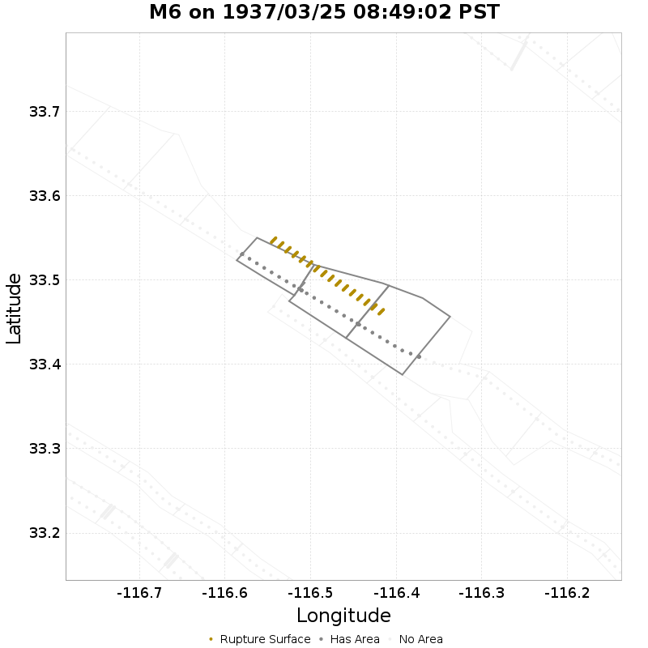
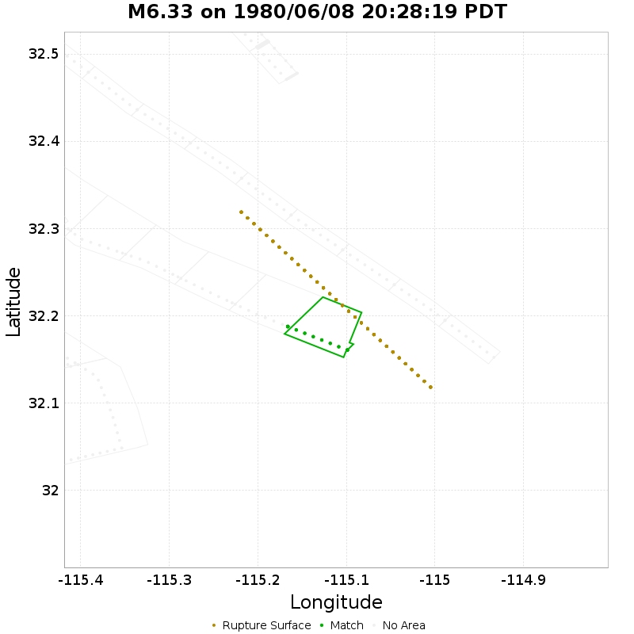

| Input # Ruptures | 60622 |
|---|---|
| Ruptures w/ Finite Surfaces | 69 |
| Min Area Fraction* | 0.5 |
| Fault Polygon Buffer | 1 [km] |
| Remove Polygon Overlap? | No |
* Ruptures are considered to reset a fault section if at least this fraction of the section's area ruptures inside its polygon
| Section Index | Section Name | Match? | Section Area | Rup Area in Poly | Area Fraction | Sect Distance To Rup | UCERF3 Rupture Section? |
|---|---|---|---|---|---|---|---|
| 402 | Cucamonga, Subsection 0 | NO | 120.69 [km^2] | 25.13 [km^2] | 0.21 | mean=5.42 [0.31 11.79] [km] | NO |
| 1833 | San Andreas (Mojave N), Subsection 1 | YES | 111.38 [km^2] | 104.41 [km^2] | 0.94 | mean=0.38 [0 0.64] [km] | YES |
| 1834 | San Andreas (Mojave N), Subsection 2 | YES | 111.38 [km^2] | 111.38 [km^2] | 1 | mean=0.38 [0 0.64] [km] | YES |
| 1835 | San Andreas (Mojave N), Subsection 3 | YES | 111.38 [km^2] | 111.38 [km^2] | 1 | mean=0.38 [0 0.64] [km] | YES |
| 1836 | San Andreas (Mojave N), Subsection 4 | YES | 111.38 [km^2] | 124.43 [km^2] | 1.12 | mean=0.38 [0 0.64] [km] | YES |
| 1837 | San Andreas (Mojave S), Subsection 0 | YES | 85.33 [km^2] | 92.29 [km^2] | 1.08 | mean=0.37 [0 0.63] [km] | YES |
| 1838 | San Andreas (Mojave S), Subsection 1 | YES | 85.33 [km^2] | 79.24 [km^2] | 0.93 | mean=0.37 [0 0.63] [km] | YES |
| 1839 | San Andreas (Mojave S), Subsection 2 | YES | 85.33 [km^2] | 85.33 [km^2] | 1 | mean=0.37 [0 0.63] [km] | YES |
| 1840 | San Andreas (Mojave S), Subsection 3 | YES | 85.33 [km^2] | 85.33 [km^2] | 1 | mean=0.37 [0 0.63] [km] | YES |
| 1841 | San Andreas (Mojave S), Subsection 4 | YES | 85.33 [km^2] | 85.33 [km^2] | 1 | mean=0.37 [0 0.63] [km] | YES |
| 1842 | San Andreas (Mojave S), Subsection 5 | YES | 85.33 [km^2] | 85.33 [km^2] | 1 | mean=0.37 [0 0.63] [km] | YES |
| 1843 | San Andreas (Mojave S), Subsection 6 | YES | 85.33 [km^2] | 85.33 [km^2] | 1 | mean=0.37 [0 0.63] [km] | YES |
| 1844 | San Andreas (Mojave S), Subsection 7 | YES | 85.33 [km^2] | 85.33 [km^2] | 1 | mean=0.37 [0 0.63] [km] | YES |
| 1845 | San Andreas (Mojave S), Subsection 8 | YES | 85.33 [km^2] | 85.33 [km^2] | 1 | mean=0.37 [0 0.63] [km] | YES |
| 1846 | San Andreas (Mojave S), Subsection 9 | YES | 85.33 [km^2] | 85.33 [km^2] | 1 | mean=0.37 [0 0.63] [km] | YES |
| 1847 | San Andreas (Mojave S), Subsection 10 | YES | 85.33 [km^2] | 85.33 [km^2] | 1 | mean=0.37 [0 0.63] [km] | YES |
| 1848 | San Andreas (Mojave S), Subsection 11 | YES | 85.33 [km^2] | 85.33 [km^2] | 1 | mean=0.37 [0 0.63] [km] | YES |
| 1849 | San Andreas (Mojave S), Subsection 12 | YES | 85.33 [km^2] | 85.33 [km^2] | 1 | mean=0.37 [0 0.63] [km] | YES |
| 1850 | San Andreas (Mojave S), Subsection 13 | YES | 85.33 [km^2] | 85.33 [km^2] | 1 | mean=0.37 [0 0.63] [km] | YES |
| 1851 | San Andreas (Mojave S), Subsection 14 | YES | 85.33 [km^2] | 97.71 [km^2] | 1.15 | mean=0.36 [0 0.57] [km] | YES |
| 1852 | San Andreas (North Branch Mill Creek), Subsection 0 | NO | 163.57 [km^2] | 69.1 [km^2] | 0.42 | mean=3.17 [0.24 8.07] [km] | NO |
| 1944 | San Andreas (San Bernardino N), Subsection 0 | YES | 75.38 [km^2] | 62.82 [km^2] | 0.83 | mean=0.12 [0 0.23] [km] | YES |
| 1945 | San Andreas (San Bernardino N), Subsection 1 | YES | 75.38 [km^2] | 75.38 [km^2] | 1 | mean=0.12 [0 0.23] [km] | YES |
| 1946 | San Andreas (San Bernardino N), Subsection 2 | YES | 75.38 [km^2] | 75.38 [km^2] | 1 | mean=0.12 [0 0.23] [km] | YES |
| 1947 | San Andreas (San Bernardino N), Subsection 3 | YES | 75.38 [km^2] | 75.38 [km^2] | 1 | mean=0.12 [0 0.23] [km] | YES |
| 1948 | San Andreas (San Bernardino N), Subsection 4 | YES | 75.38 [km^2] | 75.38 [km^2] | 1 | mean=0.12 [0 0.23] [km] | YES |
| 1949 | San Andreas (San Bernardino N), Subsection 5 | YES | 75.38 [km^2] | 81.66 [km^2] | 1.08 | mean=0.12 [0 0.23] [km] | YES |
| Section Index | Section Name | Match? | Section Area | Rup Area in Poly | Area Fraction | Sect Distance To Rup | UCERF3 Rupture Section? |
|---|---|---|---|---|---|---|---|
| 301 | Channel Islands Thrust, Subsection 2 | NO | 189.6 [km^2] | 9.34 [km^2] | 0.05 | mean=7.95 [5.12 13.37] [km] | NO |
| 302 | Channel Islands Thrust, Subsection 3 | YES | 189.6 [km^2] | 105.98 [km^2] | 0.56 | mean=7.68 [5.66 11.57] [km] | NO |
| 303 | Channel Islands Thrust, Subsection 4 | NO | 189.6 [km^2] | 70.82 [km^2] | 0.37 | mean=9.52 [7.86 13.11] [km] | NO |
| 304 | Channel Islands Thrust, Subsection 5 | NO | 189.6 [km^2] | 56.55 [km^2] | 0.3 | mean=9.71 [7.9 13.41] [km] | NO |
| 305 | Channel Islands Western Deep Ramp, Subsection 0 | YES | 200.25 [km^2] | 213.43 [km^2] | 1.07 | mean=4.5 [0.37 10.74] [km] | NO |
| 306 | Channel Islands Western Deep Ramp, Subsection 1 | YES | 200.25 [km^2] | 217.37 [km^2] | 1.09 | mean=4.76 [0.29 11.68] [km] | NO |
| 307 | Channel Islands Western Deep Ramp, Subsection 2 | YES | 200.25 [km^2] | 172.12 [km^2] | 0.86 | mean=6.09 [0.34 13.42] [km] | NO |
| 308 | Channel Islands Western Deep Ramp, Subsection 3 | YES | 200.25 [km^2] | 154.91 [km^2] | 0.77 | mean=6.78 [0.35 13.77] [km] | NO |
| 309 | Channel Islands Western Deep Ramp, Subsection 4 | NO | 200.25 [km^2] | 56.31 [km^2] | 0.28 | mean=8.07 [0.26 15.59] [km] | NO |
| 1593 | Pitas Point (Lower West), Subsection 0 | NO | 338.41 [km^2] | 52.62 [km^2] | 0.16 | mean=15.46 [7.31 28.15] [km] | NO |
| 1594 | Pitas Point (Lower West), Subsection 1 | NO | 338.41 [km^2] | 32.95 [km^2] | 0.1 | mean=16.75 [8.41 29.04] [km] | NO |
| 1595 | Pitas Point (Lower West), Subsection 2 | NO | 338.41 [km^2] | 75.73 [km^2] | 0.22 | mean=13.41 [5.37 27.6] [km] | NO |
| 1596 | Pitas Point (Lower)-Montalvo, Subsection 0 | NO | 607.58 [km^2] | 98.6 [km^2] | 0.16 | mean=15.37 [5.36 33.62] [km] | NO |
| 1597 | Pitas Point (Lower)-Montalvo, Subsection 1 | NO | 607.58 [km^2] | 227.7 [km^2] | 0.37 | mean=13.13 [4.97 28.57] [km] | NO |
| Section Index | Section Name | Match? | Section Area | Rup Area in Poly | Area Fraction | Sect Distance To Rup | UCERF3 Rupture Section? |
|---|---|---|---|---|---|---|---|
| 178 | Butano 2011 CFM, Subsection 0 | YES | 66.39 [km^2] | 63.5 [km^2] | 0.96 | mean=2.46 [0.29 5.97] [km] | NO |
| 179 | Butano 2011 CFM, Subsection 1 | YES | 66.39 [km^2] | 91.2 [km^2] | 1.37 | mean=1.2 [0.21 3.23] [km] | NO |
| 180 | Butano 2011 CFM, Subsection 2 | YES | 66.39 [km^2] | 69.42 [km^2] | 1.05 | mean=1.52 [0.35 4.05] [km] | NO |
| 1331 | Monte Vista - Shannon 2011 CFM, Subsection 0 | YES | 109.64 [km^2] | 104.13 [km^2] | 0.95 | mean=3 [0.2 7.45] [km] | NO |
| 1332 | Monte Vista - Shannon 2011 CFM, Subsection 1 | YES | 109.64 [km^2] | 104.13 [km^2] | 0.95 | mean=2.01 [0.27 5.36] [km] | NO |
| 1333 | Monte Vista - Shannon 2011 CFM, Subsection 2 | YES | 109.64 [km^2] | 104.13 [km^2] | 0.95 | mean=2.34 [0.06 6] [km] | NO |
| 1334 | Monte Vista - Shannon 2011 CFM, Subsection 3 | YES | 109.64 [km^2] | 92.56 [km^2] | 0.84 | mean=2.43 [0.22 5.94] [km] | NO |
| 1335 | Monte Vista - Shannon 2011 CFM, Subsection 4 | YES | 109.64 [km^2] | 92.56 [km^2] | 0.84 | mean=2.73 [0.2 6.64] [km] | NO |
| 1336 | Monte Vista - Shannon 2011 CFM, Subsection 5 | NO | 109.64 [km^2] | 23.14 [km^2] | 0.21 | mean=4.27 [0.53 8.56] [km] | NO |
| 1551 | Pilarcitos 2011 CFM, Subsection 0 | YES | 40.06 [km^2] | 57.85 [km^2] | 1.44 | mean=0.61 [0.13 1.46] [km] | NO |
| 1552 | Pilarcitos 2011 CFM, Subsection 1 | YES | 40.06 [km^2] | 57.85 [km^2] | 1.44 | mean=0.54 [0.14 1.23] [km] | NO |
| 1553 | Pilarcitos 2011 CFM, Subsection 2 | YES | 40.06 [km^2] | 23.14 [km^2] | 0.58 | mean=0.86 [0.15 1.95] [km] | NO |
| 1928 | San Andreas (Peninsula) 2011 CFM, Subsection 0 | YES | 80.99 [km^2] | 87.01 [km^2] | 1.07 | mean=0.24 [0 0.44] [km] | YES |
| 1929 | San Andreas (Peninsula) 2011 CFM, Subsection 1 | YES | 80.99 [km^2] | 75.2 [km^2] | 0.93 | mean=0.24 [0 0.44] [km] | YES |
| 1930 | San Andreas (Peninsula) 2011 CFM, Subsection 2 | YES | 80.99 [km^2] | 86.77 [km^2] | 1.07 | mean=0.24 [0 0.44] [km] | YES |
| 1931 | San Andreas (Peninsula) 2011 CFM, Subsection 3 | YES | 80.99 [km^2] | 75.2 [km^2] | 0.93 | mean=0.24 [0 0.44] [km] | YES |
| 1932 | San Andreas (Peninsula) 2011 CFM, Subsection 4 | YES | 80.99 [km^2] | 86.77 [km^2] | 1.07 | mean=0.24 [0 0.44] [km] | YES |
| 1933 | San Andreas (Peninsula) 2011 CFM, Subsection 5 | YES | 80.99 [km^2] | 80.99 [km^2] | 1 | mean=0.24 [0 0.44] [km] | YES |
| 1934 | San Andreas (Peninsula) 2011 CFM, Subsection 6 | YES | 80.99 [km^2] | 80.99 [km^2] | 1 | mean=0.24 [0 0.44] [km] | YES |
| 1935 | San Andreas (Peninsula) 2011 CFM, Subsection 7 | YES | 80.99 [km^2] | 80.99 [km^2] | 1 | mean=0.24 [0 0.44] [km] | YES |
| 1936 | San Andreas (Peninsula) 2011 CFM, Subsection 8 | YES | 80.99 [km^2] | 75.2 [km^2] | 0.93 | mean=0.24 [0 0.44] [km] | YES |
| 1937 | San Andreas (Peninsula) 2011 CFM, Subsection 9 | YES | 80.99 [km^2] | 86.77 [km^2] | 1.07 | mean=0.24 [0 0.44] [km] | YES |
| 1938 | San Andreas (Peninsula) 2011 CFM, Subsection 10 | YES | 80.99 [km^2] | 80.99 [km^2] | 1 | mean=0.24 [0 0.44] [km] | YES |
| 1939 | San Andreas (Peninsula) 2011 CFM, Subsection 11 | YES | 80.99 [km^2] | 75.2 [km^2] | 0.93 | mean=0.24 [0 0.44] [km] | YES |
| 1965 | San Andreas (Santa Cruz Mts) 2011 CFM, Subsection 0 | YES | 106.15 [km^2] | 113.84 [km^2] | 1.07 | mean=0.27 [0 0.46] [km] | YES |
| 1966 | San Andreas (Santa Cruz Mts) 2011 CFM, Subsection 1 | YES | 106.15 [km^2] | 106.15 [km^2] | 1 | mean=0.27 [0 0.46] [km] | YES |
| 1967 | San Andreas (Santa Cruz Mts) 2011 CFM, Subsection 2 | YES | 106.15 [km^2] | 106.63 [km^2] | 1 | mean=0.27 [0 0.46] [km] | YES |
| 1968 | San Andreas (Santa Cruz Mts) 2011 CFM, Subsection 3 | YES | 106.15 [km^2] | 106.31 [km^2] | 1 | mean=0.27 [0 0.46] [km] | YES |
| 1969 | San Andreas (Santa Cruz Mts) 2011 CFM, Subsection 4 | YES | 104.94 [km^2] | 104.8 [km^2] | 1 | mean=0.24 [0 0.45] [km] | YES |
| 1970 | San Andreas (Santa Cruz Mts) 2011 CFM, Subsection 5 | YES | 102.97 [km^2] | 102.44 [km^2] | 0.99 | mean=0.09 [0 0.18] [km] | YES |
| 1971 | San Andreas (Santa Cruz Mts) 2011 CFM, Subsection 6 | YES | 95.5 [km^2] | 94.26 [km^2] | 0.99 | mean=0.13 [0 0.26] [km] | YES |
| 1972 | San Andreas (Santa Cruz Mts) 2011 CFM, Subsection 7 | YES | 84.92 [km^2] | 78.62 [km^2] | 0.93 | mean=0.26 [0 0.47] [km] | YES |
| 2345 | Sargent 2011 CFM, Subsection 0 | NO | 64.88 [km^2] | 7.11 [km^2] | 0.11 | mean=2.18 [0.39 4.22] [km] | NO |
| 2601 | Zayante-Vergeles 2011 CFM, Subsection 3 | NO | 240.26 [km^2] | 13.74 [km^2] | 0.06 | mean=14.58 [6.59 22.92] [km] | NO |
| 2603 | Zayante-Vergeles 2011 CFM, Subsection 5 | NO | 240.26 [km^2] | 0.47 [km^2] | 0 | mean=14.94 [7.05 22.95] [km] | NO |
| Section Index | Section Name | Match? | Section Area | Rup Area in Poly | Area Fraction | Sect Distance To Rup | UCERF3 Rupture Section? |
|---|---|---|---|---|---|---|---|
| 126 | Big Pine (East), Subsection 0 | YES | 79.09 [km^2] | 66.26 [km^2] | 0.84 | mean=1.84 [0.28 4.91] [km] | NO |
| 1352 | Morales (East), Subsection 0 | YES | 86.65 [km^2] | 97.55 [km^2] | 1.13 | mean=3.23 [0.3 8.08] [km] | NO |
| 1353 | Morales (East), Subsection 1 | YES | 86.65 [km^2] | 97.55 [km^2] | 1.13 | mean=3.51 [0.2 9.03] [km] | NO |
| 1354 | Morales (East), Subsection 2 | YES | 86.65 [km^2] | 83.62 [km^2] | 0.96 | mean=4.81 [0.34 11.36] [km] | NO |
| 1606 | Pleito, Subsection 0 | YES | 148.4 [km^2] | 133.69 [km^2] | 0.9 | mean=3.25 [0.22 8.78] [km] | NO |
| 1607 | Pleito, Subsection 1 | NO | 148.4 [km^2] | 65.58 [km^2] | 0.44 | mean=6.16 [0.04 14.66] [km] | NO |
| 1610 | Pleito, Subsection 4 | NO | 148.4 [km^2] | 53.65 [km^2] | 0.36 | mean=6.29 [0.47 12.84] [km] | NO |
| 1772 | San Andreas (Big Bend), Subsection 0 | YES | 107.37 [km^2] | 107.63 [km^2] | 1 | mean=0.36 [0 0.63] [km] | YES |
| 1773 | San Andreas (Big Bend), Subsection 1 | YES | 107.37 [km^2] | 107.37 [km^2] | 1 | mean=0.36 [0 0.63] [km] | YES |
| 1774 | San Andreas (Big Bend), Subsection 2 | YES | 106.72 [km^2] | 106.76 [km^2] | 1 | mean=0.33 [0 0.63] [km] | YES |
| 1775 | San Andreas (Big Bend), Subsection 3 | YES | 104.15 [km^2] | 104.31 [km^2] | 1 | mean=0.3 [0 0.57] [km] | YES |
| 1776 | San Andreas (Big Bend), Subsection 4 | YES | 104.15 [km^2] | 104.15 [km^2] | 1 | mean=0.3 [0 0.57] [km] | YES |
| 1777 | San Andreas (Big Bend), Subsection 5 | YES | 106.81 [km^2] | 106.65 [km^2] | 1 | mean=0.33 [0 0.63] [km] | YES |
| 1778 | San Andreas (Big Bend), Subsection 6 | YES | 107.37 [km^2] | 121.01 [km^2] | 1.13 | mean=0.35 [0 0.63] [km] | YES |
| 1779 | San Andreas (Carrizo) rev, Subsection 0 | YES | 111.49 [km^2] | 117.18 [km^2] | 1.05 | mean=0.35 [0 0.64] [km] | YES |
| 1780 | San Andreas (Carrizo) rev, Subsection 1 | YES | 111.49 [km^2] | 104.52 [km^2] | 0.94 | mean=0.38 [0 0.64] [km] | YES |
| 1781 | San Andreas (Carrizo) rev, Subsection 2 | YES | 111.49 [km^2] | 111.49 [km^2] | 1 | mean=0.38 [0 0.64] [km] | YES |
| 1782 | San Andreas (Carrizo) rev, Subsection 3 | YES | 111.49 [km^2] | 111.49 [km^2] | 1 | mean=0.38 [0 0.64] [km] | YES |
| 1783 | San Andreas (Carrizo) rev, Subsection 4 | YES | 111.49 [km^2] | 111.49 [km^2] | 1 | mean=0.38 [0 0.64] [km] | YES |
| 1784 | San Andreas (Carrizo) rev, Subsection 5 | YES | 111.49 [km^2] | 111.49 [km^2] | 1 | mean=0.38 [0 0.64] [km] | YES |
| 1785 | San Andreas (Carrizo) rev, Subsection 6 | YES | 111.49 [km^2] | 111.49 [km^2] | 1 | mean=0.38 [0 0.64] [km] | YES |
| 1786 | San Andreas (Carrizo) rev, Subsection 7 | YES | 111.49 [km^2] | 118.46 [km^2] | 1.06 | mean=0.38 [0 0.64] [km] | YES |
| 1787 | San Andreas (Cholame) rev, Subsection 0 | YES | 68.25 [km^2] | 73.94 [km^2] | 1.08 | mean=0.16 [0 0.31] [km] | YES |
| 1788 | San Andreas (Cholame) rev, Subsection 1 | YES | 68.25 [km^2] | 68.25 [km^2] | 1 | mean=0.16 [0 0.31] [km] | YES |
| 1789 | San Andreas (Cholame) rev, Subsection 2 | YES | 68.25 [km^2] | 62.56 [km^2] | 0.92 | mean=0.16 [0 0.31] [km] | YES |
| 1790 | San Andreas (Cholame) rev, Subsection 3 | YES | 68.25 [km^2] | 73.94 [km^2] | 1.08 | mean=0.16 [0 0.31] [km] | YES |
| 1791 | San Andreas (Cholame) rev, Subsection 4 | YES | 68.25 [km^2] | 68.17 [km^2] | 1 | mean=0.16 [0 0.31] [km] | YES |
| 1792 | San Andreas (Cholame) rev, Subsection 5 | YES | 67.32 [km^2] | 67.22 [km^2] | 1 | mean=0.19 [0 0.35] [km] | YES |
| 1793 | San Andreas (Cholame) rev, Subsection 6 | YES | 66.2 [km^2] | 66.2 [km^2] | 1 | mean=0.26 [0 0.48] [km] | YES |
| 1794 | San Andreas (Cholame) rev, Subsection 7 | YES | 66.2 [km^2] | 66.2 [km^2] | 1 | mean=0.26 [0 0.48] [km] | YES |
| 1795 | San Andreas (Cholame) rev, Subsection 8 | YES | 66.2 [km^2] | 66.2 [km^2] | 1 | mean=0.26 [0 0.48] [km] | YES |
| 1796 | San Andreas (Cholame) rev, Subsection 9 | YES | 66.2 [km^2] | 66.2 [km^2] | 1 | mean=0.26 [0 0.48] [km] | YES |
| 1797 | San Andreas (Cholame) rev, Subsection 10 | YES | 66.2 [km^2] | 63.01 [km^2] | 0.95 | mean=0.26 [0 0.48] [km] | YES |
| 1832 | San Andreas (Mojave N), Subsection 0 | YES | 111.38 [km^2] | 111.13 [km^2] | 1 | mean=0.38 [0 0.64] [km] | YES |
| 1833 | San Andreas (Mojave N), Subsection 1 | YES | 111.38 [km^2] | 111.38 [km^2] | 1 | mean=0.38 [0 0.64] [km] | YES |
| 1834 | San Andreas (Mojave N), Subsection 2 | YES | 111.38 [km^2] | 111.38 [km^2] | 1 | mean=0.38 [0 0.64] [km] | YES |
| 1835 | San Andreas (Mojave N), Subsection 3 | YES | 111.38 [km^2] | 111.38 [km^2] | 1 | mean=0.38 [0 0.64] [km] | YES |
| 1836 | San Andreas (Mojave N), Subsection 4 | YES | 111.38 [km^2] | 124.43 [km^2] | 1.12 | mean=0.38 [0 0.64] [km] | YES |
| 1837 | San Andreas (Mojave S), Subsection 0 | YES | 85.33 [km^2] | 92.29 [km^2] | 1.08 | mean=0.37 [0 0.63] [km] | YES |
| 1838 | San Andreas (Mojave S), Subsection 1 | YES | 85.33 [km^2] | 79.24 [km^2] | 0.93 | mean=0.37 [0 0.63] [km] | YES |
| 1839 | San Andreas (Mojave S), Subsection 2 | YES | 85.33 [km^2] | 85.33 [km^2] | 1 | mean=0.37 [0 0.63] [km] | YES |
| 1840 | San Andreas (Mojave S), Subsection 3 | YES | 85.33 [km^2] | 85.33 [km^2] | 1 | mean=0.37 [0 0.63] [km] | YES |
| 1841 | San Andreas (Mojave S), Subsection 4 | YES | 85.33 [km^2] | 85.33 [km^2] | 1 | mean=0.37 [0 0.63] [km] | YES |
| 1842 | San Andreas (Mojave S), Subsection 5 | YES | 85.33 [km^2] | 85.33 [km^2] | 1 | mean=0.37 [0 0.63] [km] | YES |
| 1843 | San Andreas (Mojave S), Subsection 6 | YES | 85.33 [km^2] | 85.33 [km^2] | 1 | mean=0.37 [0 0.63] [km] | YES |
| 1844 | San Andreas (Mojave S), Subsection 7 | YES | 85.33 [km^2] | 85.33 [km^2] | 1 | mean=0.37 [0 0.63] [km] | YES |
| 1845 | San Andreas (Mojave S), Subsection 8 | YES | 85.33 [km^2] | 85.33 [km^2] | 1 | mean=0.37 [0 0.63] [km] | YES |
| 1846 | San Andreas (Mojave S), Subsection 9 | YES | 85.33 [km^2] | 85.33 [km^2] | 1 | mean=0.37 [0 0.63] [km] | YES |
| 1847 | San Andreas (Mojave S), Subsection 10 | YES | 85.33 [km^2] | 85.33 [km^2] | 1 | mean=0.37 [0 0.63] [km] | YES |
| 1848 | San Andreas (Mojave S), Subsection 11 | YES | 85.33 [km^2] | 85.33 [km^2] | 1 | mean=0.37 [0 0.63] [km] | YES |
| 1849 | San Andreas (Mojave S), Subsection 12 | YES | 85.33 [km^2] | 85.33 [km^2] | 1 | mean=0.37 [0 0.63] [km] | YES |
| 1850 | San Andreas (Mojave S), Subsection 13 | YES | 85.33 [km^2] | 85.33 [km^2] | 1 | mean=0.37 [0 0.63] [km] | YES |
| 1851 | San Andreas (Mojave S), Subsection 14 | YES | 85.33 [km^2] | 91.43 [km^2] | 1.07 | mean=0.37 [0 0.66] [km] | YES |
| 1920 | San Andreas (Parkfield), Subsection 0 | YES | 23.24 [km^2] | 30.82 [km^2] | 1.33 | mean=0.3 [0 0.53] [km] | YES |
| 1921 | San Andreas (Parkfield), Subsection 1 | YES | 20.59 [km^2] | 20.32 [km^2] | 0.99 | mean=0.36 [0 0.65] [km] | YES |
| 1922 | San Andreas (Parkfield), Subsection 2 | YES | 17.93 [km^2] | 17.66 [km^2] | 0.99 | mean=0.23 [0 0.45] [km] | YES |
| 1923 | San Andreas (Parkfield), Subsection 3 | YES | 15.27 [km^2] | 15.01 [km^2] | 0.98 | mean=0.34 [0 0.57] [km] | YES |
| 1924 | San Andreas (Parkfield), Subsection 4 | YES | 12.62 [km^2] | 10.09 [km^2] | 0.8 | mean=0.27 [0 0.5] [km] | YES |
| 1925 | San Andreas (Parkfield), Subsection 5 | YES | 9.96 [km^2] | 10.23 [km^2] | 1.03 | mean=0.3 [0 0.52] [km] | YES |
| 1926 | San Andreas (Parkfield), Subsection 6 | NO | 7.3 [km^2] | 1 [km^2] | 0.14 | mean=2.55 [0.13 5.02] [km] | NO |
| Section Index | Section Name | Match? | Section Area | Rup Area in Poly | Area Fraction | Sect Distance To Rup | UCERF3 Rupture Section? |
|---|---|---|---|---|---|---|---|
| 199 | Calaveras (Central) 2011 CFM, Subsection 8 | NO | 53.76 [km^2] | 8.42 [km^2] | 0.16 | mean=2.97 [1.92 4.86] [km] | NO |
| 200 | Calaveras (Central) 2011 CFM, Subsection 9 | YES | 56 [km^2] | 44.59 [km^2] | 0.8 | mean=2.89 [2.01 3.74] [km] | NO |
| 207 | Calaveras (No) 2011 CFM, Subsection 6 | NO | 81.65 [km^2] | 16.38 [km^2] | 0.2 | mean=2.49 [0.52 6.24] [km] | NO |
| 818 | Hayward (No) 2011 CFM, Subsection 0 | NO | 47.83 [km^2] | 2.01 [km^2] | 0.04 | mean=2.59 [0.58 4.95] [km] | NO |
| 828 | Hayward (So) 2011 CFM, Subsection 0 | YES | 89.17 [km^2] | 79.84 [km^2] | 0.9 | mean=0.28 [0 0.49] [km] | YES |
| 829 | Hayward (So) 2011 CFM, Subsection 1 | YES | 89.17 [km^2] | 85.99 [km^2] | 0.96 | mean=0.28 [0 0.48] [km] | YES |
| 830 | Hayward (So) 2011 CFM, Subsection 2 | YES | 70.87 [km^2] | 68.96 [km^2] | 0.97 | mean=0.28 [0 0.5] [km] | YES |
| 831 | Hayward (So) 2011 CFM, Subsection 3 | YES | 70.4 [km^2] | 67.69 [km^2] | 0.96 | mean=0.3 [0 0.51] [km] | YES |
| 832 | Hayward (So) 2011 CFM, Subsection 4 | YES | 70.4 [km^2] | 67.66 [km^2] | 0.96 | mean=0.3 [0 0.51] [km] | YES |
| 833 | Hayward (So) 2011 CFM, Subsection 5 | YES | 70.4 [km^2] | 67.2 [km^2] | 0.95 | mean=0.29 [0 0.5] [km] | YES |
| 834 | Hayward (So) 2011 CFM, Subsection 6 | YES | 75.07 [km^2] | 71.6 [km^2] | 0.95 | mean=0.26 [0 0.48] [km] | YES |
| 835 | Hayward (So) 2011 CFM, Subsection 7 | YES | 75.09 [km^2] | 75.76 [km^2] | 1.01 | mean=0.26 [0 0.49] [km] | YES |
| 842 | Hayward (So) extension 2011 CFM, Subsection 6 | NO | 13.58 [km^2] | 0.23 [km^2] | 0.02 | mean=2.85 [1.29 4.21] [km] | NO |
| 1283 | Mission (connected) 2011 CFM, Subsection 0 | NO | 10.73 [km^2] | 4.11 [km^2] | 0.38 | mean=1.41 [0.4 2.96] [km] | NO |
| 1284 | Mission (connected) 2011 CFM, Subsection 1 | YES | 10.73 [km^2] | 7.31 [km^2] | 0.68 | mean=1.23 [0.4 2.88] [km] | NO |
| 1285 | Mission (connected) 2011 CFM, Subsection 2 | YES | 10.73 [km^2] | 16.91 [km^2] | 1.58 | mean=1.27 [0.38 2.98] [km] | NO |
| 1286 | Mission (connected) 2011 CFM, Subsection 3 | YES | 10.73 [km^2] | 18.29 [km^2] | 1.7 | mean=1.54 [0.57 3.11] [km] | NO |
| 1287 | Mission (connected) 2011 CFM, Subsection 4 | YES | 10.73 [km^2] | 16 [km^2] | 1.49 | mean=1.89 [0.95 3.32] [km] | NO |
| 1288 | Mission (connected) 2011 CFM, Subsection 5 | YES | 10.73 [km^2] | 18.3 [km^2] | 1.71 | mean=2.19 [1.24 3.51] [km] | NO |
| 1289 | Mission (connected) 2011 CFM, Subsection 6 | YES | 10.73 [km^2] | 9.2 [km^2] | 0.86 | mean=2.52 [1.6 3.77] [km] | NO |
| 1290 | Mission (connected) 2011 CFM, Subsection 7 | YES | 10.73 [km^2] | 7.82 [km^2] | 0.73 | mean=2.93 [2.05 4.09] [km] | NO |
| 1291 | Mission (connected) 2011 CFM, Subsection 8 | NO | 10.73 [km^2] | 1.84 [km^2] | 0.17 | mean=3.22 [2.41 4.11] [km] | NO |
| 1292 | Mission (connected) 2011 CFM, Subsection 9 | NO | 10.73 [km^2] | 3.18 [km^2] | 0.3 | mean=3.24 [2.61 3.87] [km] | NO |
| 1293 | Mission (connected) 2011 CFM, Subsection 10 | NO | 10.73 [km^2] | 2.73 [km^2] | 0.25 | mean=3.2 [2.57 3.83] [km] | NO |
| 1294 | Mission (connected) 2011 CFM, Subsection 11 | NO | 10.73 [km^2] | 3.64 [km^2] | 0.34 | mean=3.11 [2.49 3.74] [km] | NO |
| Section Index | Section Name | Match? | Section Area | Rup Area in Poly | Area Fraction | Sect Distance To Rup | UCERF3 Rupture Section? |
|---|---|---|---|---|---|---|---|
| 976 | Independence rev 2011, Subsection 0 | YES | 160.94 [km^2] | 99.43 [km^2] | 0.62 | mean=3.3 [0.08 9.26] [km] | NO |
| 977 | Independence rev 2011, Subsection 1 | NO | 160.94 [km^2] | 55.24 [km^2] | 0.34 | mean=5.72 [0.37 12.57] [km] | NO |
| 980 | Independence rev 2011, Subsection 4 | NO | 160.94 [km^2] | 11.05 [km^2] | 0.07 | mean=7.18 [0.61 13.59] [km] | NO |
| 981 | Independence rev 2011, Subsection 5 | YES | 160.94 [km^2] | 110.48 [km^2] | 0.69 | mean=4.42 [0.42 10.56] [km] | NO |
| 982 | Independence rev 2011, Subsection 6 | YES | 160.94 [km^2] | 110.48 [km^2] | 0.69 | mean=3.94 [0.35 9.08] [km] | NO |
| 983 | Independence rev 2011, Subsection 7 | YES | 160.94 [km^2] | 110.48 [km^2] | 0.69 | mean=4.85 [0.22 11.02] [km] | NO |
| 1478 | Owens Valley, Subsection 0 | YES | 77.34 [km^2] | 82.86 [km^2] | 1.07 | mean=0.38 [0 0.64] [km] | YES |
| 1479 | Owens Valley, Subsection 1 | YES | 77.34 [km^2] | 77.34 [km^2] | 1 | mean=0.38 [0 0.64] [km] | YES |
| 1480 | Owens Valley, Subsection 2 | YES | 77.34 [km^2] | 77.34 [km^2] | 1 | mean=0.38 [0 0.64] [km] | YES |
| 1481 | Owens Valley, Subsection 3 | YES | 77.34 [km^2] | 77.34 [km^2] | 1 | mean=0.38 [0 0.64] [km] | YES |
| 1482 | Owens Valley, Subsection 4 | YES | 77.34 [km^2] | 77.34 [km^2] | 1 | mean=0.38 [0 0.64] [km] | YES |
| 1483 | Owens Valley, Subsection 5 | YES | 77.34 [km^2] | 77.34 [km^2] | 1 | mean=0.38 [0 0.64] [km] | YES |
| 1484 | Owens Valley, Subsection 6 | YES | 77.34 [km^2] | 77.34 [km^2] | 1 | mean=0.38 [0 0.64] [km] | YES |
| 1485 | Owens Valley, Subsection 7 | YES | 77.34 [km^2] | 77.34 [km^2] | 1 | mean=0.38 [0 0.64] [km] | YES |
| 1486 | Owens Valley, Subsection 8 | YES | 77.34 [km^2] | 77.34 [km^2] | 1 | mean=0.38 [0 0.64] [km] | YES |
| 1487 | Owens Valley, Subsection 9 | YES | 77.34 [km^2] | 66.29 [km^2] | 0.86 | mean=0.38 [0 0.64] [km] | YES |
| 1488 | Owens Valley, Subsection 10 | YES | 77.34 [km^2] | 88.39 [km^2] | 1.14 | mean=0.38 [0 0.64] [km] | YES |
| 1489 | Owens Valley, Subsection 11 | YES | 77.34 [km^2] | 71.81 [km^2] | 0.93 | mean=0.38 [0 0.64] [km] | YES |
| 1490 | Owens Valley, Subsection 12 | YES | 77.34 [km^2] | 82.86 [km^2] | 1.07 | mean=0.38 [0 0.64] [km] | YES |
| 1491 | Owens Valley, Subsection 13 | YES | 77.34 [km^2] | 77.34 [km^2] | 1 | mean=0.38 [0 0.64] [km] | YES |
| 1492 | Owens Valley, Subsection 14 | YES | 77.34 [km^2] | 77.34 [km^2] | 1 | mean=0.38 [0 0.64] [km] | YES |
| 1493 | Owens Valley, Subsection 15 | YES | 77.34 [km^2] | 77.34 [km^2] | 1 | mean=0.38 [0 0.64] [km] | YES |
| 1494 | Owens Valley, Subsection 16 | YES | 77.34 [km^2] | 71.81 [km^2] | 0.93 | mean=0.38 [0 0.64] [km] | YES |
| 1495 | Owens Valley Keough Hot Springs, Subsection 0 | YES | 87.63 [km^2] | 49.72 [km^2] | 0.57 | mean=3.4 [0.24 7.92] [km] | NO |
| 2378 | Sierra Nevada (No Extension), Subsection 1 | YES | 137.16 [km^2] | 93.91 [km^2] | 0.68 | mean=2.88 [0.41 6.93] [km] | NO |
| 2379 | Sierra Nevada (No Extension), Subsection 2 | YES | 137.16 [km^2] | 99.43 [km^2] | 0.72 | mean=3.32 [0.15 8.01] [km] | NO |
| 2380 | Sierra Nevada (No Extension), Subsection 3 | YES | 137.16 [km^2] | 99.43 [km^2] | 0.72 | mean=2.92 [0.25 7.24] [km] | NO |
| Section Index | Section Name | Match? | Section Area | Rup Area in Poly | Area Fraction | Sect Distance To Rup | UCERF3 Rupture Section? |
|---|---|---|---|---|---|---|---|
| 979 | Independence rev 2011, Subsection 3 | NO | 160.94 [km^2] | 1.27 [km^2] | 0.01 | mean=7.23 [3.15 11.97] [km] | NO |
| 980 | Independence rev 2011, Subsection 4 | NO | 160.94 [km^2] | 44.61 [km^2] | 0.28 | mean=6.04 [1.2 11.07] [km] | NO |
| 981 | Independence rev 2011, Subsection 5 | YES | 160.94 [km^2] | 109.5 [km^2] | 0.68 | mean=3.45 [0.19 8.2] [km] | NO |
| 982 | Independence rev 2011, Subsection 6 | NO | 160.94 [km^2] | 30.42 [km^2] | 0.19 | mean=4.2 [0.5 8.69] [km] | NO |
| 1487 | Owens Valley, Subsection 9 | NO | 77.34 [km^2] | 16.98 [km^2] | 0.22 | mean=1.52 [0.55 2.56] [km] | NO |
| 1488 | Owens Valley, Subsection 10 | NO | 77.34 [km^2] | 21.29 [km^2] | 0.28 | mean=1.41 [0.6 2.27] [km] | NO |
| 1489 | Owens Valley, Subsection 11 | NO | 77.34 [km^2] | 24.84 [km^2] | 0.32 | mean=1.44 [0.65 2.32] [km] | NO |
| 1490 | Owens Valley, Subsection 12 | NO | 77.34 [km^2] | 24.33 [km^2] | 0.31 | mean=1.5 [0.58 2.56] [km] | NO |
| Section Index | Section Name | Match? | Section Area | Rup Area in Poly | Area Fraction | Sect Distance To Rup | UCERF3 Rupture Section? |
|---|---|---|---|---|---|---|---|
| 1495 | Owens Valley Keough Hot Springs, Subsection 0 | NO | 87.63 [km^2] | 29.72 [km^2] | 0.34 | mean=3.13 [0.6 6.79] [km] | NO |
| 1496 | Owens Valley Keough Hot Springs, Subsection 1 | YES | 87.63 [km^2] | 59.44 [km^2] | 0.68 | mean=2.61 [0.3 6.12] [km] | NO |
| 1497 | Owens Valley Keough Hot Springs, Subsection 2 | YES | 87.63 [km^2] | 71.33 [km^2] | 0.81 | mean=3.03 [0.14 7.4] [km] | NO |
| Section Index | Section Name | Match? | Section Area | Rup Area in Poly | Area Fraction | Sect Distance To Rup | UCERF3 Rupture Section? |
|---|---|---|---|---|---|---|---|
| 1814 | San Andreas (Creeping Section) 2011 CFM, Subsection 3 | YES | 6.93 [km^2] | 7.6 [km^2] | 1.1 | mean=4.16 [3.51 5.26] [km] | NO |
| 1815 | San Andreas (Creeping Section) 2011 CFM, Subsection 4 | YES | 6.93 [km^2] | 18.25 [km^2] | 2.63 | mean=4.19 [3.63 4.75] [km] | NO |
| 1816 | San Andreas (Creeping Section) 2011 CFM, Subsection 5 | YES | 6.93 [km^2] | 10.64 [km^2] | 1.54 | mean=4.62 [4.06 5.18] [km] | NO |
| 1817 | San Andreas (Creeping Section) 2011 CFM, Subsection 6 | YES | 6.93 [km^2] | 7.1 [km^2] | 1.02 | mean=5.16 [4.5 5.86] [km] | NO |
| 1818 | San Andreas (Creeping Section) 2011 CFM, Subsection 7 | NO | 6.93 [km^2] | 0.25 [km^2] | 0.04 | mean=6.6 [5.18 8.52] [km] | NO |
| Section Index | Section Name | Match? | Section Area | Rup Area in Poly | Area Fraction | Sect Distance To Rup | UCERF3 Rupture Section? |
|---|---|---|---|---|---|---|---|
| 2165 | San Jacinto (Clark) rev, Subsection 0 | NO | 118.01 [km^2] | 31.13 [km^2] | 0.26 | mean=5.12 [4.15 8.06] [km] | NO |
| 2166 | San Jacinto (Clark) rev, Subsection 1 | YES | 118.01 [km^2] | 99.62 [km^2] | 0.84 | mean=4.91 [4.42 6.71] [km] | NO |
| 2167 | San Jacinto (Clark) rev, Subsection 2 | NO | 118.01 [km^2] | 37.36 [km^2] | 0.32 | mean=4.86 [4.48 6.62] [km] | NO |
| Section Index | Section Name | Match? | Section Area | Rup Area in Poly | Area Fraction | Sect Distance To Rup | UCERF3 Rupture Section? |
|---|---|---|---|---|---|---|---|
| 1048 | Laguna Salada, Subsection 6 | NO | 44.13 [km^2] | 3.15 [km^2] | 0.07 | mean=3.24 [0.36 6.65] [km] | NO |
| 1049 | Laguna Salada, Subsection 7 | YES | 44.13 [km^2] | 44.13 [km^2] | 1 | mean=0.28 [0 0.5] [km] | YES |
| 1050 | Laguna Salada, Subsection 8 | YES | 44.13 [km^2] | 40.98 [km^2] | 0.93 | mean=0.28 [0 0.5] [km] | YES |
| 1051 | Laguna Salada, Subsection 9 | YES | 44.13 [km^2] | 47.28 [km^2] | 1.07 | mean=0.28 [0 0.5] [km] | YES |
| 1052 | Laguna Salada, Subsection 10 | YES | 44.13 [km^2] | 40.98 [km^2] | 0.93 | mean=0.28 [0 0.5] [km] | YES |
| 1053 | Laguna Salada, Subsection 11 | YES | 44.13 [km^2] | 44.13 [km^2] | 1 | mean=0.28 [0 0.5] [km] | YES |
| Section Index | Section Name | Match? | Section Area | Rup Area in Poly | Area Fraction | Sect Distance To Rup | UCERF3 Rupture Section? |
|---|---|---|---|---|---|---|---|
| 706 | Great Valley 04b Gordon Valley, Subsection 0 | YES | 93.69 [km^2] | 71.14 [km^2] | 0.76 | mean=2.5 [0.19 5.9] [km] | NO |
| 707 | Great Valley 04b Gordon Valley, Subsection 1 | YES | 93.69 [km^2] | 110.66 [km^2] | 1.18 | mean=1.97 [0.3 4.35] [km] | NO |
| 708 | Great Valley 04b Gordon Valley, Subsection 2 | YES | 93.69 [km^2] | 86.95 [km^2] | 0.93 | mean=2.08 [0.33 4.65] [km] | NO |
| Section Index | Section Name | Match? | Section Area | Rup Area in Poly | Area Fraction | Sect Distance To Rup | UCERF3 Rupture Section? |
|---|---|---|---|---|---|---|---|
| 2159 | San Jacinto (Borrego), Subsection 0 | YES | 70.39 [km^2] | 70.39 [km^2] | 1 | mean=0.32 [0 0.52] [km] | YES |
| 2160 | San Jacinto (Borrego), Subsection 1 | YES | 63.83 [km^2] | 58.51 [km^2] | 0.92 | mean=0.31 [0 0.51] [km] | YES |
| 2161 | San Jacinto (Borrego), Subsection 2 | YES | 52.36 [km^2] | 53.32 [km^2] | 1.02 | mean=0.3 [0 0.51] [km] | YES |
| 2162 | San Jacinto (Borrego), Subsection 3 | NO | 37.93 [km^2] | 4.36 [km^2] | 0.12 | mean=2.99 [0.03 5.93] [km] | NO |
| 2176 | San Jacinto (Coyote Creek), Subsection 5 | NO | 110.26 [km^2] | 5.87 [km^2] | 0.05 | mean=3.75 [0.15 7.53] [km] | NO |
| Section Index | Section Name | Match? | Section Area | Rup Area in Poly | Area Fraction | Sect Distance To Rup | UCERF3 Rupture Section? |
|---|---|---|---|---|---|---|---|
| 2153 | San Jacinto (Anza) rev, Subsection 0 | YES | 125.44 [km^2] | 139.47 [km^2] | 1.11 | mean=1.86 [1.38 4.7] [km] | NO |
| 2154 | San Jacinto (Anza) rev, Subsection 1 | YES | 125.44 [km^2] | 84.9 [km^2] | 0.68 | mean=1.87 [1.31 4.74] [km] | NO |
| 2155 | San Jacinto (Anza) rev, Subsection 2 | NO | 125.44 [km^2] | 18.19 [km^2] | 0.15 | mean=4.01 [1.53 8.41] [km] | NO |
| 2190 | San Jacinto (Stepovers Combined), Subsection 2 | NO | 98.65 [km^2] | 36.38 [km^2] | 0.37 | mean=1.79 [0.69 5.04] [km] | NO |
| 2191 | San Jacinto (Stepovers Combined), Subsection 3 | YES | 98.65 [km^2] | 60.64 [km^2] | 0.61 | mean=1.44 [0.69 4.67] [km] | NO |
| Section Index | Section Name | Match? | Section Area | Rup Area in Poly | Area Fraction | Sect Distance To Rup | UCERF3 Rupture Section? |
|---|---|---|---|---|---|---|---|
| 178 | Butano 2011 CFM, Subsection 0 | YES | 66.39 [km^2] | 63.5 [km^2] | 0.96 | mean=2.46 [0.29 5.97] [km] | NO |
| 179 | Butano 2011 CFM, Subsection 1 | YES | 66.39 [km^2] | 91.2 [km^2] | 1.37 | mean=1.2 [0.21 3.23] [km] | NO |
| 180 | Butano 2011 CFM, Subsection 2 | YES | 66.39 [km^2] | 69.42 [km^2] | 1.05 | mean=1.52 [0.35 4.05] [km] | NO |
| 1026 | King Range 2011 CFM, Subsection 0 | NO | 72.56 [km^2] | 31.47 [km^2] | 0.43 | mean=3.84 [0.24 9.37] [km] | NO |
| 1027 | King Range 2011 CFM, Subsection 1 | YES | 72.56 [km^2] | 53.95 [km^2] | 0.74 | mean=3.04 [0.31 7.11] [km] | NO |
| 1028 | King Range 2011 CFM, Subsection 2 | YES | 72.56 [km^2] | 62.95 [km^2] | 0.87 | mean=2.91 [0.19 6.25] [km] | NO |
| 1029 | King Range 2011 CFM, Subsection 3 | YES | 72.56 [km^2] | 53.95 [km^2] | 0.74 | mean=3.22 [0.21 7.88] [km] | NO |
| 1030 | King Range 2011 CFM, Subsection 4 | YES | 72.56 [km^2] | 53.95 [km^2] | 0.74 | mean=3.45 [0.1 8.16] [km] | NO |
| 1031 | King Range 2011 CFM, Subsection 5 | YES | 72.56 [km^2] | 62.95 [km^2] | 0.87 | mean=3.1 [0.21 7.39] [km] | NO |
| 1032 | King Range 2011 CFM, Subsection 6 | YES | 72.56 [km^2] | 62.95 [km^2] | 0.87 | mean=2.88 [0.54 6.58] [km] | NO |
| 1247 | Mendocino, Subsection 0 | NO | 44.57 [km^2] | 4.5 [km^2] | 0.1 | mean=2.51 [0.01 5] [km] | NO |
| 1331 | Monte Vista - Shannon 2011 CFM, Subsection 0 | YES | 109.64 [km^2] | 104.13 [km^2] | 0.95 | mean=3 [0.2 7.45] [km] | NO |
| 1332 | Monte Vista - Shannon 2011 CFM, Subsection 1 | YES | 109.64 [km^2] | 104.13 [km^2] | 0.95 | mean=2.01 [0.27 5.36] [km] | NO |
| 1333 | Monte Vista - Shannon 2011 CFM, Subsection 2 | YES | 109.64 [km^2] | 104.13 [km^2] | 0.95 | mean=2.34 [0.06 6] [km] | NO |
| 1334 | Monte Vista - Shannon 2011 CFM, Subsection 3 | YES | 109.64 [km^2] | 92.56 [km^2] | 0.84 | mean=2.43 [0.22 5.94] [km] | NO |
| 1335 | Monte Vista - Shannon 2011 CFM, Subsection 4 | YES | 109.64 [km^2] | 92.56 [km^2] | 0.84 | mean=2.73 [0.2 6.64] [km] | NO |
| 1336 | Monte Vista - Shannon 2011 CFM, Subsection 5 | NO | 109.64 [km^2] | 23.14 [km^2] | 0.21 | mean=4.27 [0.53 8.56] [km] | NO |
| 1551 | Pilarcitos 2011 CFM, Subsection 0 | YES | 40.06 [km^2] | 57.85 [km^2] | 1.44 | mean=0.61 [0.13 1.46] [km] | NO |
| 1552 | Pilarcitos 2011 CFM, Subsection 1 | YES | 40.06 [km^2] | 57.85 [km^2] | 1.44 | mean=0.54 [0.14 1.23] [km] | NO |
| 1553 | Pilarcitos 2011 CFM, Subsection 2 | YES | 40.06 [km^2] | 23.14 [km^2] | 0.58 | mean=0.86 [0.15 1.95] [km] | NO |
| 1623 | Point Reyes 2011 connector, Subsection 0 | YES | 49.56 [km^2] | 57.85 [km^2] | 1.17 | mean=2.7 [0.16 5.81] [km] | NO |
| 1624 | Point Reyes 2011 connector, Subsection 1 | NO | 49.56 [km^2] | 23.14 [km^2] | 0.47 | mean=3.19 [0.12 6.42] [km] | NO |
| 1831 | San Andreas (Creeping Section) 2011 CFM, Subsection 20 | NO | 45.06 [km^2] | 8.17 [km^2] | 0.18 | mean=3.53 [0.83 6.39] [km] | NO |
| 1864 | San Andreas (North Coast) 2011 CFM, Subsection 0 | YES | 58.68 [km^2] | 69.35 [km^2] | 1.18 | mean=0.24 [0 0.44] [km] | YES |
| 1865 | San Andreas (North Coast) 2011 CFM, Subsection 1 | YES | 58.68 [km^2] | 58.68 [km^2] | 1 | mean=0.24 [0 0.44] [km] | YES |
| 1866 | San Andreas (North Coast) 2011 CFM, Subsection 2 | YES | 58.68 [km^2] | 53.79 [km^2] | 0.92 | mean=0.24 [0 0.44] [km] | YES |
| 1867 | San Andreas (North Coast) 2011 CFM, Subsection 3 | YES | 58.68 [km^2] | 63.57 [km^2] | 1.08 | mean=0.24 [0 0.44] [km] | YES |
| 1868 | San Andreas (North Coast) 2011 CFM, Subsection 4 | YES | 58.68 [km^2] | 58.68 [km^2] | 1 | mean=0.24 [0 0.44] [km] | YES |
| 1869 | San Andreas (North Coast) 2011 CFM, Subsection 5 | YES | 58.68 [km^2] | 53.79 [km^2] | 0.92 | mean=0.24 [0 0.44] [km] | YES |
| 1870 | San Andreas (North Coast) 2011 CFM, Subsection 6 | YES | 58.68 [km^2] | 63.57 [km^2] | 1.08 | mean=0.24 [0 0.44] [km] | YES |
| 1871 | San Andreas (North Coast) 2011 CFM, Subsection 7 | YES | 58.68 [km^2] | 53.79 [km^2] | 0.92 | mean=0.24 [0 0.44] [km] | YES |
| 1872 | San Andreas (North Coast) 2011 CFM, Subsection 8 | YES | 58.68 [km^2] | 58.68 [km^2] | 1 | mean=0.24 [0 0.44] [km] | YES |
| 1873 | San Andreas (North Coast) 2011 CFM, Subsection 9 | YES | 58.68 [km^2] | 63.57 [km^2] | 1.08 | mean=0.24 [0 0.44] [km] | YES |
| 1874 | San Andreas (North Coast) 2011 CFM, Subsection 10 | YES | 58.68 [km^2] | 53.79 [km^2] | 0.92 | mean=0.24 [0 0.44] [km] | YES |
| 1875 | San Andreas (North Coast) 2011 CFM, Subsection 11 | YES | 58.68 [km^2] | 63.57 [km^2] | 1.08 | mean=0.24 [0 0.44] [km] | YES |
| 1876 | San Andreas (North Coast) 2011 CFM, Subsection 12 | YES | 58.68 [km^2] | 58.68 [km^2] | 1 | mean=0.24 [0 0.44] [km] | YES |
| 1877 | San Andreas (North Coast) 2011 CFM, Subsection 13 | YES | 58.68 [km^2] | 53.79 [km^2] | 0.92 | mean=0.24 [0 0.44] [km] | YES |
| 1878 | San Andreas (North Coast) 2011 CFM, Subsection 14 | YES | 58.68 [km^2] | 63.57 [km^2] | 1.08 | mean=0.24 [0 0.44] [km] | YES |
| 1879 | San Andreas (North Coast) 2011 CFM, Subsection 15 | YES | 58.68 [km^2] | 58.68 [km^2] | 1 | mean=0.24 [0 0.44] [km] | YES |
| 1880 | San Andreas (North Coast) 2011 CFM, Subsection 16 | YES | 58.68 [km^2] | 58.68 [km^2] | 1 | mean=0.24 [0 0.44] [km] | YES |
| 1881 | San Andreas (North Coast) 2011 CFM, Subsection 17 | YES | 58.68 [km^2] | 58.68 [km^2] | 1 | mean=0.24 [0 0.44] [km] | YES |
| 1882 | San Andreas (North Coast) 2011 CFM, Subsection 18 | YES | 58.68 [km^2] | 48.9 [km^2] | 0.83 | mean=0.24 [0 0.44] [km] | YES |
| 1883 | San Andreas (North Coast) 2011 CFM, Subsection 19 | YES | 58.68 [km^2] | 68.45 [km^2] | 1.17 | mean=0.24 [0 0.44] [km] | YES |
| 1884 | San Andreas (North Coast) 2011 CFM, Subsection 20 | YES | 58.68 [km^2] | 58.68 [km^2] | 1 | mean=0.24 [0 0.44] [km] | YES |
| 1885 | San Andreas (North Coast) 2011 CFM, Subsection 21 | YES | 58.68 [km^2] | 58.68 [km^2] | 1 | mean=0.24 [0 0.44] [km] | YES |
| 1886 | San Andreas (North Coast) 2011 CFM, Subsection 22 | YES | 58.68 [km^2] | 58.68 [km^2] | 1 | mean=0.24 [0 0.44] [km] | YES |
| 1887 | San Andreas (North Coast) 2011 CFM, Subsection 23 | YES | 58.68 [km^2] | 58.68 [km^2] | 1 | mean=0.24 [0 0.44] [km] | YES |
| 1888 | San Andreas (North Coast) 2011 CFM, Subsection 24 | YES | 58.68 [km^2] | 58.68 [km^2] | 1 | mean=0.24 [0 0.44] [km] | YES |
| 1889 | San Andreas (North Coast) 2011 CFM, Subsection 25 | YES | 58.68 [km^2] | 53.79 [km^2] | 0.92 | mean=0.24 [0 0.44] [km] | YES |
| 1890 | San Andreas (North Coast) 2011 CFM, Subsection 26 | YES | 58.68 [km^2] | 63.57 [km^2] | 1.08 | mean=0.24 [0 0.44] [km] | YES |
| 1891 | San Andreas (North Coast) 2011 CFM, Subsection 27 | YES | 58.68 [km^2] | 58.68 [km^2] | 1 | mean=0.24 [0 0.44] [km] | YES |
| 1892 | San Andreas (North Coast) 2011 CFM, Subsection 28 | YES | 58.68 [km^2] | 58.68 [km^2] | 1 | mean=0.24 [0 0.44] [km] | YES |
| 1893 | San Andreas (North Coast) 2011 CFM, Subsection 29 | YES | 58.68 [km^2] | 53.79 [km^2] | 0.92 | mean=0.24 [0 0.44] [km] | YES |
| 1894 | San Andreas (North Coast) 2011 CFM, Subsection 30 | YES | 58.68 [km^2] | 63.57 [km^2] | 1.08 | mean=0.24 [0 0.44] [km] | YES |
| 1895 | San Andreas (North Coast) 2011 CFM, Subsection 31 | YES | 58.68 [km^2] | 48.9 [km^2] | 0.83 | mean=0.24 [0 0.44] [km] | YES |
| 1896 | San Andreas (Offshore) 2011 CFM, Subsection 0 | YES | 53.95 [km^2] | 63.34 [km^2] | 1.17 | mean=0.24 [0 0.46] [km] | YES |
| 1897 | San Andreas (Offshore) 2011 CFM, Subsection 1 | YES | 53.95 [km^2] | 53.95 [km^2] | 1 | mean=0.24 [0 0.46] [km] | YES |
| 1898 | San Andreas (Offshore) 2011 CFM, Subsection 2 | YES | 53.95 [km^2] | 49.46 [km^2] | 0.92 | mean=0.24 [0 0.46] [km] | YES |
| 1899 | San Andreas (Offshore) 2011 CFM, Subsection 3 | YES | 53.95 [km^2] | 58.45 [km^2] | 1.08 | mean=0.24 [0 0.46] [km] | YES |
| 1900 | San Andreas (Offshore) 2011 CFM, Subsection 4 | YES | 53.95 [km^2] | 53.95 [km^2] | 1 | mean=0.24 [0 0.46] [km] | YES |
| 1901 | San Andreas (Offshore) 2011 CFM, Subsection 5 | YES | 53.95 [km^2] | 53.95 [km^2] | 1 | mean=0.24 [0 0.46] [km] | YES |
| 1902 | San Andreas (Offshore) 2011 CFM, Subsection 6 | YES | 53.95 [km^2] | 53.95 [km^2] | 1 | mean=0.24 [0 0.46] [km] | YES |
| 1903 | San Andreas (Offshore) 2011 CFM, Subsection 7 | YES | 53.95 [km^2] | 53.95 [km^2] | 1 | mean=0.24 [0 0.46] [km] | YES |
| 1904 | San Andreas (Offshore) 2011 CFM, Subsection 8 | YES | 53.95 [km^2] | 53.95 [km^2] | 1 | mean=0.24 [0 0.46] [km] | YES |
| 1905 | San Andreas (Offshore) 2011 CFM, Subsection 9 | YES | 53.95 [km^2] | 53.95 [km^2] | 1 | mean=0.24 [0 0.46] [km] | YES |
| 1906 | San Andreas (Offshore) 2011 CFM, Subsection 10 | YES | 53.95 [km^2] | 53.95 [km^2] | 1 | mean=0.24 [0 0.46] [km] | YES |
| 1907 | San Andreas (Offshore) 2011 CFM, Subsection 11 | YES | 53.95 [km^2] | 53.95 [km^2] | 1 | mean=0.24 [0 0.46] [km] | YES |
| 1908 | San Andreas (Offshore) 2011 CFM, Subsection 12 | YES | 53.95 [km^2] | 53.95 [km^2] | 1 | mean=0.24 [0 0.46] [km] | YES |
| 1909 | San Andreas (Offshore) 2011 CFM, Subsection 13 | YES | 53.95 [km^2] | 53.95 [km^2] | 1 | mean=0.24 [0 0.46] [km] | YES |
| 1910 | San Andreas (Offshore) 2011 CFM, Subsection 14 | YES | 53.95 [km^2] | 53.95 [km^2] | 1 | mean=0.24 [0 0.46] [km] | YES |
| 1911 | San Andreas (Offshore) 2011 CFM, Subsection 15 | YES | 53.95 [km^2] | 49.46 [km^2] | 0.92 | mean=0.24 [0 0.46] [km] | YES |
| 1912 | San Andreas (Offshore) 2011 CFM, Subsection 16 | YES | 53.95 [km^2] | 58.45 [km^2] | 1.08 | mean=0.24 [0 0.46] [km] | YES |
| 1913 | San Andreas (Offshore) 2011 CFM, Subsection 17 | YES | 53.95 [km^2] | 53.95 [km^2] | 1 | mean=0.24 [0 0.46] [km] | YES |
| 1914 | San Andreas (Offshore) 2011 CFM, Subsection 18 | YES | 53.95 [km^2] | 53.95 [km^2] | 1 | mean=0.24 [0 0.46] [km] | YES |
| 1915 | San Andreas (Offshore) 2011 CFM, Subsection 19 | YES | 53.95 [km^2] | 53.95 [km^2] | 1 | mean=0.24 [0 0.46] [km] | YES |
| 1916 | San Andreas (Offshore) 2011 CFM, Subsection 20 | YES | 53.95 [km^2] | 53.95 [km^2] | 1 | mean=0.24 [0 0.46] [km] | YES |
| 1917 | San Andreas (Offshore) 2011 CFM, Subsection 21 | YES | 53.95 [km^2] | 53.95 [km^2] | 1 | mean=0.24 [0 0.46] [km] | YES |
| 1918 | San Andreas (Offshore) 2011 CFM, Subsection 22 | YES | 53.95 [km^2] | 53.95 [km^2] | 1 | mean=0.24 [0 0.46] [km] | YES |
| 1919 | San Andreas (Offshore) 2011 CFM, Subsection 23 | YES | 53.95 [km^2] | 44.96 [km^2] | 0.83 | mean=0.24 [0 0.46] [km] | YES |
| 1928 | San Andreas (Peninsula) 2011 CFM, Subsection 0 | YES | 80.99 [km^2] | 87.01 [km^2] | 1.07 | mean=0.24 [0 0.44] [km] | YES |
| 1929 | San Andreas (Peninsula) 2011 CFM, Subsection 1 | YES | 80.99 [km^2] | 75.2 [km^2] | 0.93 | mean=0.24 [0 0.44] [km] | YES |
| 1930 | San Andreas (Peninsula) 2011 CFM, Subsection 2 | YES | 80.99 [km^2] | 86.77 [km^2] | 1.07 | mean=0.24 [0 0.44] [km] | YES |
| 1931 | San Andreas (Peninsula) 2011 CFM, Subsection 3 | YES | 80.99 [km^2] | 75.2 [km^2] | 0.93 | mean=0.24 [0 0.44] [km] | YES |
| 1932 | San Andreas (Peninsula) 2011 CFM, Subsection 4 | YES | 80.99 [km^2] | 86.77 [km^2] | 1.07 | mean=0.24 [0 0.44] [km] | YES |
| 1933 | San Andreas (Peninsula) 2011 CFM, Subsection 5 | YES | 80.99 [km^2] | 80.99 [km^2] | 1 | mean=0.24 [0 0.44] [km] | YES |
| 1934 | San Andreas (Peninsula) 2011 CFM, Subsection 6 | YES | 80.99 [km^2] | 80.99 [km^2] | 1 | mean=0.24 [0 0.44] [km] | YES |
| 1935 | San Andreas (Peninsula) 2011 CFM, Subsection 7 | YES | 80.99 [km^2] | 80.99 [km^2] | 1 | mean=0.24 [0 0.44] [km] | YES |
| 1936 | San Andreas (Peninsula) 2011 CFM, Subsection 8 | YES | 80.99 [km^2] | 75.2 [km^2] | 0.93 | mean=0.24 [0 0.44] [km] | YES |
| 1937 | San Andreas (Peninsula) 2011 CFM, Subsection 9 | YES | 80.99 [km^2] | 86.77 [km^2] | 1.07 | mean=0.24 [0 0.44] [km] | YES |
| 1938 | San Andreas (Peninsula) 2011 CFM, Subsection 10 | YES | 80.99 [km^2] | 80.99 [km^2] | 1 | mean=0.24 [0 0.44] [km] | YES |
| 1939 | San Andreas (Peninsula) 2011 CFM, Subsection 11 | YES | 80.99 [km^2] | 80.99 [km^2] | 1 | mean=0.24 [0 0.44] [km] | YES |
| 1940 | San Andreas (Peninsula) 2011 CFM, Subsection 12 | YES | 80.99 [km^2] | 80.99 [km^2] | 1 | mean=0.24 [0 0.44] [km] | YES |
| 1941 | San Andreas (Peninsula) 2011 CFM, Subsection 13 | YES | 80.99 [km^2] | 80.99 [km^2] | 1 | mean=0.24 [0 0.44] [km] | YES |
| 1942 | San Andreas (Peninsula) 2011 CFM, Subsection 14 | YES | 80.99 [km^2] | 80.99 [km^2] | 1 | mean=0.24 [0 0.44] [km] | YES |
| 1943 | San Andreas (Peninsula) 2011 CFM, Subsection 15 | YES | 80.99 [km^2] | 69.42 [km^2] | 0.86 | mean=0.24 [0 0.44] [km] | YES |
| 1965 | San Andreas (Santa Cruz Mts) 2011 CFM, Subsection 0 | YES | 106.15 [km^2] | 113.84 [km^2] | 1.07 | mean=0.27 [0 0.46] [km] | YES |
| 1966 | San Andreas (Santa Cruz Mts) 2011 CFM, Subsection 1 | YES | 106.15 [km^2] | 106.15 [km^2] | 1 | mean=0.27 [0 0.46] [km] | YES |
| 1967 | San Andreas (Santa Cruz Mts) 2011 CFM, Subsection 2 | YES | 106.15 [km^2] | 106.63 [km^2] | 1 | mean=0.27 [0 0.46] [km] | YES |
| 1968 | San Andreas (Santa Cruz Mts) 2011 CFM, Subsection 3 | YES | 106.15 [km^2] | 106.31 [km^2] | 1 | mean=0.27 [0 0.46] [km] | YES |
| 1969 | San Andreas (Santa Cruz Mts) 2011 CFM, Subsection 4 | YES | 104.94 [km^2] | 104.8 [km^2] | 1 | mean=0.24 [0 0.45] [km] | YES |
| 1970 | San Andreas (Santa Cruz Mts) 2011 CFM, Subsection 5 | YES | 102.97 [km^2] | 102.44 [km^2] | 0.99 | mean=0.09 [0 0.18] [km] | YES |
| 1971 | San Andreas (Santa Cruz Mts) 2011 CFM, Subsection 6 | YES | 95.5 [km^2] | 94.26 [km^2] | 0.99 | mean=0.13 [0 0.26] [km] | YES |
| 1972 | San Andreas (Santa Cruz Mts) 2011 CFM, Subsection 7 | YES | 84.92 [km^2] | 84.46 [km^2] | 0.99 | mean=0.26 [0 0.47] [km] | YES |
| 1973 | San Andreas (Santa Cruz Mts) 2011 CFM, Subsection 8 | YES | 84.92 [km^2] | 78.86 [km^2] | 0.93 | mean=0.26 [0 0.47] [km] | YES |
| 2115 | San Gregorio (North) 2011 CFM, Subsection 0 | YES | 65.2 [km^2] | 39.12 [km^2] | 0.6 | mean=0.91 [0.36 1.62] [km] | NO |
| 2345 | Sargent 2011 CFM, Subsection 0 | NO | 64.88 [km^2] | 7.11 [km^2] | 0.11 | mean=2.18 [0.39 4.22] [km] | NO |
| 2601 | Zayante-Vergeles 2011 CFM, Subsection 3 | NO | 240.26 [km^2] | 13.74 [km^2] | 0.06 | mean=14.58 [6.59 22.92] [km] | NO |
| 2603 | Zayante-Vergeles 2011 CFM, Subsection 5 | NO | 240.26 [km^2] | 0.47 [km^2] | 0 | mean=14.94 [7.05 22.95] [km] | NO |
| 2605 | Zayante-Vergeles 2011 CFM, Subsection 7 | NO | 240.26 [km^2] | 45.26 [km^2] | 0.19 | mean=12.53 [2.56 22.46] [km] | NO |
| Section Index | Section Name | Match? | Section Area | Rup Area in Poly | Area Fraction | Sect Distance To Rup | UCERF3 Rupture Section? |
|---|---|---|---|---|---|---|---|
| 2154 | San Jacinto (Anza) rev, Subsection 1 | YES | 125.44 [km^2] | 117.6 [km^2] | 0.94 | mean=0.33 [0 0.55] [km] | YES |
| 2155 | San Jacinto (Anza) rev, Subsection 2 | YES | 125.44 [km^2] | 125.44 [km^2] | 1 | mean=0.33 [0 0.55] [km] | YES |
| 2156 | San Jacinto (Anza) rev, Subsection 3 | YES | 125.44 [km^2] | 125.44 [km^2] | 1 | mean=0.33 [0 0.55] [km] | YES |
| 2157 | San Jacinto (Anza) rev, Subsection 4 | NO | 125.44 [km^2] | 7.84 [km^2] | 0.06 | mean=4.04 [0 8.01] [km] | NO |
| Section Index | Section Name | Match? | Section Area | Rup Area in Poly | Area Fraction | Sect Distance To Rup | UCERF3 Rupture Section? |
|---|---|---|---|---|---|---|---|
| 305 | Channel Islands Western Deep Ramp, Subsection 0 | NO | 200.25 [km^2] | 0.76 [km^2] | 0 | mean=13.88 [3.81 25.28] [km] | NO |
| 1593 | Pitas Point (Lower West), Subsection 0 | NO | 338.41 [km^2] | 116.35 [km^2] | 0.34 | mean=10.85 [0.28 24.2] [km] | NO |
| 1594 | Pitas Point (Lower West), Subsection 1 | NO | 338.41 [km^2] | 42.93 [km^2] | 0.13 | mean=13.38 [2.29 26.44] [km] | NO |
| 1597 | Pitas Point (Lower)-Montalvo, Subsection 1 | NO | 607.58 [km^2] | 137.69 [km^2] | 0.23 | mean=9.16 [0.08 24.71] [km] | NO |
| Section Index | Section Name | Match? | Section Area | Rup Area in Poly | Area Fraction | Sect Distance To Rup | UCERF3 Rupture Section? |
|---|---|---|---|---|---|---|---|
| 341 | Compton, Subsection 0 | NO | 354.88 [km^2] | 104.26 [km^2] | 0.29 | mean=11.56 [0.4 23.97] [km] | NO |
| 1387 | Newport-Inglewood alt 1, Subsection 1 | YES | 98.13 [km^2] | 92 [km^2] | 0.94 | mean=0.38 [0 0.67] [km] | YES |
| 1388 | Newport-Inglewood alt 1, Subsection 2 | YES | 98.13 [km^2] | 98.13 [km^2] | 1 | mean=0.38 [0 0.67] [km] | YES |
| 1389 | Newport-Inglewood alt 1, Subsection 3 | NO | 98.13 [km^2] | 6.13 [km^2] | 0.06 | mean=3.54 [0 7.01] [km] | NO |
| Section Index | Section Name | Match? | Section Area | Rup Area in Poly | Area Fraction | Sect Distance To Rup | UCERF3 Rupture Section? |
|---|---|---|---|---|---|---|---|
| 1920 | San Andreas (Parkfield), Subsection 0 | NO | 23.24 [km^2] | 2.06 [km^2] | 0.09 | mean=2.26 [0.45 4.59] [km] | NO |
| 1921 | San Andreas (Parkfield), Subsection 1 | YES | 20.59 [km^2] | 20.32 [km^2] | 0.99 | mean=0.36 [0 0.65] [km] | YES |
| 1922 | San Andreas (Parkfield), Subsection 2 | YES | 17.93 [km^2] | 17.66 [km^2] | 0.99 | mean=0.23 [0 0.45] [km] | YES |
| 1923 | San Andreas (Parkfield), Subsection 3 | YES | 15.27 [km^2] | 15.01 [km^2] | 0.98 | mean=0.34 [0 0.57] [km] | YES |
| 1924 | San Andreas (Parkfield), Subsection 4 | YES | 12.62 [km^2] | 10.09 [km^2] | 0.8 | mean=0.27 [0 0.5] [km] | YES |
| 1925 | San Andreas (Parkfield), Subsection 5 | YES | 9.96 [km^2] | 10.23 [km^2] | 1.03 | mean=0.3 [0 0.52] [km] | YES |
| 1926 | San Andreas (Parkfield), Subsection 6 | NO | 7.3 [km^2] | 1 [km^2] | 0.14 | mean=2.55 [0.13 5.02] [km] | NO |
| Section Index | Section Name | Match? | Section Area | Rup Area in Poly | Area Fraction | Sect Distance To Rup | UCERF3 Rupture Section? |
|---|---|---|---|---|---|---|---|
| 290 | Cerro Prieto, Subsection 3 | NO | 95.71 [km^2] | 31.67 [km^2] | 0.33 | mean=2.42 [0.44 5.6] [km] | NO |

| Section Index | Section Name | Match? | Section Area | Rup Area in Poly | Area Fraction | Sect Distance To Rup | UCERF3 Rupture Section? |
|---|---|---|---|---|---|---|---|
| 2158 | San Jacinto (Anza) rev, Subsection 5 | NO | 125.44 [km^2] | 10.08 [km^2] | 0.08 | mean=5.77 [2.96 11.32] [km] | NO |
| 2165 | San Jacinto (Clark) rev, Subsection 0 | NO | 118.01 [km^2] | 48.37 [km^2] | 0.41 | mean=5.71 [2.68 11.28] [km] | NO |
| 2166 | San Jacinto (Clark) rev, Subsection 1 | NO | 118.01 [km^2] | 9.07 [km^2] | 0.08 | mean=6.72 [2.63 12.95] [km] | NO |
| Section Index | Section Name | Match? | Section Area | Rup Area in Poly | Area Fraction | Sect Distance To Rup | UCERF3 Rupture Section? |
|---|---|---|---|---|---|---|---|
| 166 | Brawley (Seismic Zone) alt 1, Subsection 9 | YES | 7.91 [km^2] | 113.01 [km^2] | 14.29 | mean=3.19 [2.62 4.2] [km] | NO |
| 961 | Imperial, Subsection 0 | YES | 51.96 [km^2] | 45.25 [km^2] | 0.87 | mean=0.22 [0 0.4] [km] | YES |
| 962 | Imperial, Subsection 1 | YES | 51.96 [km^2] | 49.36 [km^2] | 0.95 | mean=0.22 [0 0.4] [km] | YES |
| 963 | Imperial, Subsection 2 | YES | 51.96 [km^2] | 49.36 [km^2] | 0.95 | mean=0.22 [0 0.4] [km] | YES |
| 964 | Imperial, Subsection 3 | YES | 51.96 [km^2] | 49.36 [km^2] | 0.95 | mean=0.22 [0 0.4] [km] | YES |
| 965 | Imperial, Subsection 4 | YES | 51.96 [km^2] | 49.36 [km^2] | 0.95 | mean=0.22 [0 0.4] [km] | YES |
| 966 | Imperial, Subsection 5 | YES | 51.96 [km^2] | 49.36 [km^2] | 0.95 | mean=0.22 [0 0.4] [km] | YES |
| 967 | Imperial, Subsection 6 | YES | 51.96 [km^2] | 49.36 [km^2] | 0.95 | mean=0.22 [0 0.4] [km] | YES |
| 968 | Imperial, Subsection 7 | YES | 51.96 [km^2] | 49.36 [km^2] | 0.95 | mean=0.22 [0 0.4] [km] | YES |
| 969 | Imperial, Subsection 8 | YES | 51.96 [km^2] | 49.36 [km^2] | 0.95 | mean=0.22 [0 0.4] [km] | YES |
| 970 | Imperial, Subsection 9 | YES | 51.96 [km^2] | 49.36 [km^2] | 0.95 | mean=0.22 [0 0.4] [km] | YES |
| 971 | Imperial, Subsection 10 | YES | 51.96 [km^2] | 49.8 [km^2] | 0.96 | mean=0.22 [0 0.4] [km] | YES |
| 972 | Imperial, Subsection 11 | YES | 51.96 [km^2] | 50.01 [km^2] | 0.96 | mean=0.22 [0 0.4] [km] | YES |
| Section Index | Section Name | Match? | Section Area | Rup Area in Poly | Area Fraction | Sect Distance To Rup | UCERF3 Rupture Section? |
|---|---|---|---|---|---|---|---|
| 2161 | San Jacinto (Borrego), Subsection 2 | YES | 52.36 [km^2] | 48 [km^2] | 0.92 | mean=0.3 [0 0.48] [km] | YES |
| 2162 | San Jacinto (Borrego), Subsection 3 | YES | 37.93 [km^2] | 39.13 [km^2] | 1.03 | mean=0.24 [0 0.46] [km] | YES |
| 2163 | San Jacinto (Borrego), Subsection 4 | YES | 34.57 [km^2] | 34.85 [km^2] | 1.01 | mean=0.26 [0 0.47] [km] | YES |
| 2164 | San Jacinto (Borrego), Subsection 5 | YES | 37.4 [km^2] | 40.28 [km^2] | 1.08 | mean=0.28 [0 0.54] [km] | YES |
| 2192 | San Jacinto (Superstition Mtn), Subsection 0 | NO | 55.43 [km^2] | 3.12 [km^2] | 0.06 | mean=3.18 [0.24 6.86] [km] | NO |
| Section Index | Section Name | Match? | Section Area | Rup Area in Poly | Area Fraction | Sect Distance To Rup | UCERF3 Rupture Section? |
|---|---|---|---|---|---|---|---|
| 2355 | Scodie Lineament, Subsection 0 | YES | 16.13 [km^2] | 16.21 [km^2] | 1.01 | mean=1.32 [0.4 2.53] [km] | NO |
| 2356 | Scodie Lineament, Subsection 1 | YES | 16.13 [km^2] | 16.21 [km^2] | 1.01 | mean=1.25 [0.25 2.47] [km] | NO |
| 2357 | Scodie Lineament, Subsection 2 | YES | 16.13 [km^2] | 10.81 [km^2] | 0.67 | mean=1.22 [0.21 2.43] [km] | NO |
| 2358 | Scodie Lineament, Subsection 3 | YES | 16.13 [km^2] | 16.21 [km^2] | 1.01 | mean=1.24 [0.29 2.39] [km] | NO |
| 2359 | Scodie Lineament, Subsection 4 | NO | 16.13 [km^2] | 2.7 [km^2] | 0.17 | mean=1.95 [0.45 3.53] [km] | NO |
| Section Index | Section Name | Match? | Section Area | Rup Area in Poly | Area Fraction | Sect Distance To Rup | UCERF3 Rupture Section? |
|---|---|---|---|---|---|---|---|
| 1225 | Manix-Afton Hills, Subsection 2 | YES | 77.77 [km^2] | 52.47 [km^2] | 0.67 | mean=1.79 [0.47 5.48] [km] | NO |
| 1226 | Manix-Afton Hills, Subsection 3 | NO | 77.77 [km^2] | 28.25 [km^2] | 0.36 | mean=2.11 [0.35 6.19] [km] | NO |
| Section Index | Section Name | Match? | Section Area | Rup Area in Poly | Area Fraction | Sect Distance To Rup | UCERF3 Rupture Section? |
|---|---|---|---|---|---|---|---|
| 1860 | San Andreas (North Branch Mill Creek), Subsection 8 | YES | 140.85 [km^2] | 103.7 [km^2] | 0.74 | mean=3.15 [0.64 7.72] [km] | NO |
| 1861 | San Andreas (North Branch Mill Creek), Subsection 9 | YES | 140.85 [km^2] | 109.81 [km^2] | 0.78 | mean=3.27 [0.83 7.77] [km] | NO |
| 1862 | San Andreas (North Branch Mill Creek), Subsection 10 | NO | 140.85 [km^2] | 18.3 [km^2] | 0.13 | mean=5.28 [0.89 11.31] [km] | NO |
| 1959 | San Andreas (San Gorgonio Pass-Garnet HIll), Subsection 2 | YES | 94.91 [km^2] | 67.1 [km^2] | 0.71 | mean=2.21 [0.31 5.26] [km] | NO |
| 1960 | San Andreas (San Gorgonio Pass-Garnet HIll), Subsection 3 | YES | 94.91 [km^2] | 85.4 [km^2] | 0.9 | mean=2.75 [0.36 6.6] [km] | NO |
| 1961 | San Andreas (San Gorgonio Pass-Garnet HIll), Subsection 4 | NO | 94.91 [km^2] | 12.2 [km^2] | 0.13 | mean=4.44 [0.36 9.07] [km] | NO |
| Section Index | Section Name | Match? | Section Area | Rup Area in Poly | Area Fraction | Sect Distance To Rup | UCERF3 Rupture Section? |
|---|---|---|---|---|---|---|---|
| 167 | Breckenridge 2011, Subsection 0 | NO | 82.93 [km^2] | 8.77 [km^2] | 0.11 | mean=4.49 [2.06 7.07] [km] | NO |
| 1609 | Pleito, Subsection 3 | NO | 148.4 [km^2] | 17.11 [km^2] | 0.12 | mean=12.56 [5.8 20.4] [km] | NO |
| 2568 | White Wolf, Subsection 0 | YES | 95.84 [km^2] | 89.85 [km^2] | 0.94 | mean=0.31 [0 0.56] [km] | YES |
| 2569 | White Wolf, Subsection 1 | YES | 95.84 [km^2] | 95.84 [km^2] | 1 | mean=0.31 [0 0.56] [km] | YES |
| 2570 | White Wolf, Subsection 2 | YES | 95.84 [km^2] | 95.84 [km^2] | 1 | mean=0.31 [0 0.56] [km] | YES |
| 2571 | White Wolf, Subsection 3 | YES | 95.84 [km^2] | 95.84 [km^2] | 1 | mean=0.31 [0 0.58] [km] | YES |
| 2572 | White Wolf, Subsection 4 | YES | 95.84 [km^2] | 95.41 [km^2] | 1 | mean=0.31 [0 0.55] [km] | YES |
| 2573 | White Wolf, Subsection 5 | YES | 95.84 [km^2] | 95.84 [km^2] | 1 | mean=0.31 [0 0.56] [km] | YES |
| 2574 | White Wolf, Subsection 6 | YES | 95.84 [km^2] | 95.41 [km^2] | 1 | mean=0.31 [0 0.57] [km] | YES |
| 2575 | White Wolf, Subsection 7 | YES | 95.84 [km^2] | 95.41 [km^2] | 1 | mean=0.31 [0 0.57] [km] | YES |
| 2576 | White Wolf, Subsection 8 | YES | 95.84 [km^2] | 95.41 [km^2] | 1 | mean=0.31 [0 0.58] [km] | YES |
| Section Index | Section Name | Match? | Section Area | Rup Area in Poly | Area Fraction | Sect Distance To Rup | UCERF3 Rupture Section? |
|---|---|---|---|---|---|---|---|
| 2169 | San Jacinto (Clark) rev, Subsection 4 | NO | 118.01 [km^2] | 4.25 [km^2] | 0.04 | mean=4.3 [0.46 9.77] [km] | NO |
| 2170 | San Jacinto (Clark) rev, Subsection 5 | NO | 118.01 [km^2] | 32.99 [km^2] | 0.28 | mean=2.3 [0.62 6.73] [km] | NO |
| Section Index | Section Name | Match? | Section Area | Rup Area in Poly | Area Fraction | Sect Distance To Rup | UCERF3 Rupture Section? |
|---|---|---|---|---|---|---|---|
| 101 | Big Lagoon - Bald Mtn 2011 CFM, Subsection 0 | NO | 222.99 [km^2] | 20.91 [km^2] | 0.09 | mean=4.79 [0.51 9.62] [km] | NO |
| 102 | Big Lagoon - Bald Mtn 2011 CFM, Subsection 1 | YES | 222.99 [km^2] | 183.44 [km^2] | 0.82 | mean=2.44 [0.24 6.71] [km] | NO |
| 103 | Big Lagoon - Bald Mtn 2011 CFM, Subsection 2 | NO | 222.99 [km^2] | 44.42 [km^2] | 0.2 | mean=3.78 [0.24 8.71] [km] | NO |
| 561 | Fickle Hill (alt1), Subsection 0 | NO | 218.56 [km^2] | 19.08 [km^2] | 0.09 | mean=10.44 [7.8 15.4] [km] | NO |
| 562 | Fickle Hill (alt1), Subsection 1 | NO | 218.56 [km^2] | 3.14 [km^2] | 0.01 | mean=12.07 [8.61 18.45] [km] | NO |
| 1200 | Mad River (alt1), Subsection 0 | NO | 212.37 [km^2] | 54.62 [km^2] | 0.26 | mean=7.92 [5.68 12.76] [km] | NO |
| 1201 | Mad River (alt1), Subsection 1 | NO | 212.37 [km^2] | 24.83 [km^2] | 0.12 | mean=10.03 [6.67 15.89] [km] | NO |
| 1232 | McKinleyville (alt1), Subsection 0 | NO | 193.29 [km^2] | 66.11 [km^2] | 0.34 | mean=5.47 [2.78 9.4] [km] | NO |
| 1233 | McKinleyville (alt1), Subsection 1 | NO | 193.29 [km^2] | 58.27 [km^2] | 0.3 | mean=7.91 [4.82 12.99] [km] | NO |
| 2509 | Trinidad (alt1), Subsection 0 | YES | 225.54 [km^2] | 113.93 [km^2] | 0.51 | mean=3.16 [0.61 6.65] [km] | NO |
| 2510 | Trinidad (alt1), Subsection 1 | NO | 225.54 [km^2] | 96.43 [km^2] | 0.43 | mean=5.15 [2.25 9.38] [km] | NO |

| Section Index | Section Name | Match? | Section Area | Rup Area in Poly | Area Fraction | Sect Distance To Rup | UCERF3 Rupture Section? |
|---|---|---|---|---|---|---|---|
| 1920 | San Andreas (Parkfield), Subsection 0 | NO | 23.24 [km^2] | 2.06 [km^2] | 0.09 | mean=2.26 [0.45 4.59] [km] | NO |
| 1921 | San Andreas (Parkfield), Subsection 1 | YES | 20.59 [km^2] | 20.32 [km^2] | 0.99 | mean=0.36 [0 0.65] [km] | YES |
| 1922 | San Andreas (Parkfield), Subsection 2 | YES | 17.93 [km^2] | 17.66 [km^2] | 0.99 | mean=0.23 [0 0.45] [km] | YES |
| 1923 | San Andreas (Parkfield), Subsection 3 | YES | 15.27 [km^2] | 15.01 [km^2] | 0.98 | mean=0.34 [0 0.57] [km] | YES |
| 1924 | San Andreas (Parkfield), Subsection 4 | YES | 12.62 [km^2] | 10.09 [km^2] | 0.8 | mean=0.27 [0 0.5] [km] | YES |
| 1925 | San Andreas (Parkfield), Subsection 5 | YES | 9.96 [km^2] | 10.23 [km^2] | 1.03 | mean=0.3 [0 0.52] [km] | YES |
| 1926 | San Andreas (Parkfield), Subsection 6 | NO | 7.3 [km^2] | 1 [km^2] | 0.14 | mean=2.55 [0.13 5.02] [km] | NO |

| Section Index | Section Name | Match? | Section Area | Rup Area in Poly | Area Fraction | Sect Distance To Rup | UCERF3 Rupture Section? |
|---|---|---|---|---|---|---|---|
| 2159 | San Jacinto (Borrego), Subsection 0 | YES | 70.39 [km^2] | 70.39 [km^2] | 1 | mean=0.32 [0 0.52] [km] | YES |
| 2160 | San Jacinto (Borrego), Subsection 1 | YES | 63.83 [km^2] | 58.51 [km^2] | 0.92 | mean=0.31 [0 0.51] [km] | YES |
| 2161 | San Jacinto (Borrego), Subsection 2 | YES | 52.36 [km^2] | 53.32 [km^2] | 1.02 | mean=0.3 [0 0.48] [km] | YES |
| 2162 | San Jacinto (Borrego), Subsection 3 | YES | 37.93 [km^2] | 39.13 [km^2] | 1.03 | mean=0.24 [0 0.46] [km] | YES |
| 2163 | San Jacinto (Borrego), Subsection 4 | YES | 34.57 [km^2] | 34.85 [km^2] | 1.01 | mean=0.26 [0 0.47] [km] | YES |
| 2164 | San Jacinto (Borrego), Subsection 5 | YES | 37.4 [km^2] | 40.28 [km^2] | 1.08 | mean=0.28 [0 0.54] [km] | YES |
| 2176 | San Jacinto (Coyote Creek), Subsection 5 | NO | 110.26 [km^2] | 5.87 [km^2] | 0.05 | mean=3.75 [0.15 7.53] [km] | NO |
| 2192 | San Jacinto (Superstition Mtn), Subsection 0 | NO | 55.43 [km^2] | 3.12 [km^2] | 0.06 | mean=3.18 [0.24 6.86] [km] | NO |
| Section Index | Section Name | Match? | Section Area | Rup Area in Poly | Area Fraction | Sect Distance To Rup | UCERF3 Rupture Section? |
|---|---|---|---|---|---|---|---|
| 1299 | Mission Hills 2011, Subsection 0 | YES | 104.36 [km^2] | 64.14 [km^2] | 0.61 | mean=3.17 [1.05 5.34] [km] | NO |
| 1300 | Mission Hills 2011, Subsection 1 | NO | 104.36 [km^2] | 8.75 [km^2] | 0.08 | mean=4.13 [1.07 7.19] [km] | NO |
| 1412 | Northridge, Subsection 3 | NO | 98.43 [km^2] | 21.75 [km^2] | 0.22 | mean=9.89 [2.15 17.57] [km] | NO |
| 1413 | Northridge, Subsection 4 | NO | 98.43 [km^2] | 25.12 [km^2] | 0.26 | mean=11.28 [3.52 19.52] [km] | NO |
| 1414 | Northridge Hills, Subsection 0 | NO | 324.75 [km^2] | 147.56 [km^2] | 0.45 | mean=2.67 [0.18 8.27] [km] | NO |
| 2095 | San Gabriel, Subsection 0 | NO | 119.96 [km^2] | 48.66 [km^2] | 0.41 | mean=2.86 [0.27 6.62] [km] | NO |
| 2096 | San Gabriel, Subsection 1 | YES | 119.96 [km^2] | 74.9 [km^2] | 0.62 | mean=3.06 [0.73 5.4] [km] | NO |
| 2097 | San Gabriel, Subsection 2 | NO | 119.96 [km^2] | 34.76 [km^2] | 0.29 | mean=4.77 [1.56 9.47] [km] | NO |
| 2301 | Santa Susana East (connector), Subsection 0 | NO | 74.82 [km^2] | 17.27 [km^2] | 0.23 | mean=7.72 [0.26 16.71] [km] | NO |
| 2302 | Santa Susana East (connector), Subsection 1 | NO | 74.82 [km^2] | 10.76 [km^2] | 0.14 | mean=8.7 [0.49 18.01] [km] | NO |
| 2303 | Santa Susana alt 1, Subsection 0 | NO | 162.32 [km^2] | 1.57 [km^2] | 0.01 | mean=4.18 [0.45 8.43] [km] | NO |
| 2374 | Sierra Madre (San Fernando), Subsection 0 | YES | 106.74 [km^2] | 96.2 [km^2] | 0.9 | mean=0.35 [0 0.64] [km] | YES |
| 2375 | Sierra Madre (San Fernando), Subsection 1 | YES | 106.74 [km^2] | 104.95 [km^2] | 0.98 | mean=0.35 [0 0.71] [km] | YES |
| 2376 | Sierra Madre (San Fernando), Subsection 2 | YES | 106.74 [km^2] | 103.61 [km^2] | 0.97 | mean=0.33 [0 0.58] [km] | YES |
| 2527 | Verdugo, Subsection 2 | NO | 125.99 [km^2] | 0.67 [km^2] | 0.01 | mean=8.66 [5.77 13.09] [km] | NO |
| 2528 | Verdugo, Subsection 3 | NO | 125.99 [km^2] | 39.47 [km^2] | 0.31 | mean=5.54 [3.07 8.68] [km] | NO |
| Section Index | Section Name | Match? | Section Area | Rup Area in Poly | Area Fraction | Sect Distance To Rup | UCERF3 Rupture Section? |
|---|---|---|---|---|---|---|---|
| 166 | Brawley (Seismic Zone) alt 1, Subsection 9 | YES | 7.91 [km^2] | 113.01 [km^2] | 14.29 | mean=3.19 [2.62 4.2] [km] | NO |
| 965 | Imperial, Subsection 4 | YES | 51.96 [km^2] | 45.25 [km^2] | 0.87 | mean=0.22 [0 0.4] [km] | YES |
| 966 | Imperial, Subsection 5 | YES | 51.96 [km^2] | 49.36 [km^2] | 0.95 | mean=0.22 [0 0.4] [km] | YES |
| 967 | Imperial, Subsection 6 | YES | 51.96 [km^2] | 49.36 [km^2] | 0.95 | mean=0.22 [0 0.4] [km] | YES |
| 968 | Imperial, Subsection 7 | YES | 51.96 [km^2] | 49.36 [km^2] | 0.95 | mean=0.22 [0 0.4] [km] | YES |
| 969 | Imperial, Subsection 8 | YES | 51.96 [km^2] | 49.36 [km^2] | 0.95 | mean=0.22 [0 0.4] [km] | YES |
| 970 | Imperial, Subsection 9 | YES | 51.96 [km^2] | 49.36 [km^2] | 0.95 | mean=0.22 [0 0.4] [km] | YES |
| 971 | Imperial, Subsection 10 | YES | 51.96 [km^2] | 49.8 [km^2] | 0.96 | mean=0.22 [0 0.4] [km] | YES |
| 972 | Imperial, Subsection 11 | YES | 51.96 [km^2] | 50.01 [km^2] | 0.96 | mean=0.22 [0 0.4] [km] | YES |
| Section Index | Section Name | Match? | Section Area | Rup Area in Poly | Area Fraction | Sect Distance To Rup | UCERF3 Rupture Section? |
|---|---|---|---|---|---|---|---|
| 795 | Hartley Springs 2011 CFM, Subsection 0 | NO | 122.81 [km^2] | 28.56 [km^2] | 0.23 | mean=6.51 [4.77 9.85] [km] | NO |
| 796 | Hartley Springs 2011 CFM, Subsection 1 | NO | 122.81 [km^2] | 8.06 [km^2] | 0.07 | mean=5.54 [4.38 8.82] [km] | NO |
| 866 | Hilton Creek 2011 CFM, Subsection 1 | YES | 132.68 [km^2] | 123.01 [km^2] | 0.93 | mean=0.35 [0 0.6] [km] | YES |
| 867 | Hilton Creek 2011 CFM, Subsection 2 | YES | 132.68 [km^2] | 129 [km^2] | 0.97 | mean=0.35 [0 0.6] [km] | YES |
| 868 | Hilton Creek 2011 CFM, Subsection 3 | YES | 132.68 [km^2] | 129 [km^2] | 0.97 | mean=0.35 [0 0.6] [km] | YES |
| Section Index | Section Name | Match? | Section Area | Rup Area in Poly | Area Fraction | Sect Distance To Rup | UCERF3 Rupture Section? |
|---|---|---|---|---|---|---|---|
| 867 | Hilton Creek 2011 CFM, Subsection 2 | NO | 132.68 [km^2] | 32.68 [km^2] | 0.25 | mean=9.65 [6.92 14.26] [km] | NO |

| Section Index | Section Name | Match? | Section Area | Rup Area in Poly | Area Fraction | Sect Distance To Rup | UCERF3 Rupture Section? |
|---|---|---|---|---|---|---|---|
| 1042 | Laguna Salada, Subsection 0 | YES | 44.13 [km^2] | 30.01 [km^2] | 0.68 | mean=4.79 [3.47 6.13] [km] | NO |
| Section Index | Section Name | Match? | Section Area | Rup Area in Poly | Area Fraction | Sect Distance To Rup | UCERF3 Rupture Section? |
|---|---|---|---|---|---|---|---|
| 163 | Brawley (Seismic Zone) alt 1, Subsection 6 | YES | 7.91 [km^2] | 60.37 [km^2] | 7.64 | mean=4.39 [2.89 6.48] [km] | NO |
| Section Index | Section Name | Match? | Section Area | Rup Area in Poly | Area Fraction | Sect Distance To Rup | UCERF3 Rupture Section? |
|---|---|---|---|---|---|---|---|
| 769 | Great Valley 12, Subsection 3 | NO | 39.45 [km^2] | 2.54 [km^2] | 0.06 | mean=3.19 [2.09 5.51] [km] | NO |
| 770 | Great Valley 13 (Coalinga), Subsection 0 | YES | 223.29 [km^2] | 222.83 [km^2] | 1 | mean=0.39 [0 0.67] [km] | YES |
| 771 | Great Valley 13 (Coalinga), Subsection 1 | YES | 223.29 [km^2] | 223.29 [km^2] | 1 | mean=0.39 [0 0.66] [km] | YES |
| 772 | Great Valley 13 (Coalinga), Subsection 2 | YES | 223.29 [km^2] | 213.14 [km^2] | 0.95 | mean=0.39 [0 0.66] [km] | YES |
| 773 | Great Valley 14 (Kettleman Hills), Subsection 0 | NO | 415.33 [km^2] | 0.46 [km^2] | 0 | mean=11.22 [1.38 24.01] [km] | NO |
| Section Index | Section Name | Match? | Section Area | Rup Area in Poly | Area Fraction | Sect Distance To Rup | UCERF3 Rupture Section? |
|---|---|---|---|---|---|---|---|
| 193 | Calaveras (Central) 2011 CFM, Subsection 2 | YES | 32.81 [km^2] | 27.93 [km^2] | 0.85 | mean=0.36 [0 0.56] [km] | YES |
| 194 | Calaveras (Central) 2011 CFM, Subsection 3 | YES | 38.32 [km^2] | 35.47 [km^2] | 0.93 | mean=0.36 [0 0.58] [km] | YES |
| 195 | Calaveras (Central) 2011 CFM, Subsection 4 | YES | 38.32 [km^2] | 37.92 [km^2] | 0.99 | mean=0.37 [0 0.58] [km] | YES |
| 196 | Calaveras (Central) 2011 CFM, Subsection 5 | YES | 38.45 [km^2] | 37.64 [km^2] | 0.98 | mean=0.37 [0 0.57] [km] | YES |
| 197 | Calaveras (Central) 2011 CFM, Subsection 6 | NO | 50.1 [km^2] | 3 [km^2] | 0.06 | mean=2.68 [0.01 5.53] [km] | NO |
| 836 | Hayward (So) extension 2011 CFM, Subsection 0 | YES | 13.58 [km^2] | 19.17 [km^2] | 1.41 | mean=1.53 [0.44 2.68] [km] | NO |
| 837 | Hayward (So) extension 2011 CFM, Subsection 1 | NO | 13.58 [km^2] | 4.01 [km^2] | 0.29 | mean=1.81 [0.35 4.07] [km] | NO |


| Section Index | Section Name | Match? | Section Area | Rup Area in Poly | Area Fraction | Sect Distance To Rup | UCERF3 Rupture Section? |
|---|---|---|---|---|---|---|---|
| 772 | Great Valley 13 (Coalinga), Subsection 2 | NO | 223.29 [km^2] | 3.47 [km^2] | 0.02 | mean=10.76 [0.45 21.68] [km] | NO |
| 773 | Great Valley 14 (Kettleman Hills), Subsection 0 | NO | 415.33 [km^2] | 22.78 [km^2] | 0.05 | mean=17.23 [0.23 35.69] [km] | NO |
| 774 | Great Valley 14 (Kettleman Hills), Subsection 1 | NO | 415.33 [km^2] | 14.86 [km^2] | 0.04 | mean=14.9 [0.34 32.11] [km] | NO |
| Section Index | Section Name | Match? | Section Area | Rup Area in Poly | Area Fraction | Sect Distance To Rup | UCERF3 Rupture Section? |
|---|---|---|---|---|---|---|---|
| 1295 | Mission Creek, Subsection 0 | NO | 137.91 [km^2] | 17.56 [km^2] | 0.13 | mean=6.55 [4.73 8.86] [km] | NO |
| 1296 | Mission Creek, Subsection 1 | NO | 137.91 [km^2] | 16.31 [km^2] | 0.12 | mean=6.78 [5.09 9.46] [km] | NO |
| 1568 | Pinto Mtn, Subsection 0 | NO | 105.57 [km^2] | 0.25 [km^2] | 0 | mean=6.07 [0.81 12.16] [km] | NO |
| 1858 | San Andreas (North Branch Mill Creek), Subsection 6 | NO | 132.56 [km^2] | 52.93 [km^2] | 0.4 | mean=3.46 [0.49 6.55] [km] | NO |
| 1859 | San Andreas (North Branch Mill Creek), Subsection 7 | NO | 134.83 [km^2] | 61.21 [km^2] | 0.45 | mean=3.44 [0.23 7.49] [km] | NO |
| 1860 | San Andreas (North Branch Mill Creek), Subsection 8 | NO | 140.85 [km^2] | 24.08 [km^2] | 0.17 | mean=4.79 [0.27 11.5] [km] | NO |
| 1961 | San Andreas (San Gorgonio Pass-Garnet HIll), Subsection 4 | NO | 94.91 [km^2] | 33.87 [km^2] | 0.36 | mean=1.82 [0.4 4.25] [km] | NO |
| 1962 | San Andreas (San Gorgonio Pass-Garnet HIll), Subsection 5 | YES | 94.91 [km^2] | 57.7 [km^2] | 0.61 | mean=1.23 [0.3 3.17] [km] | NO |
| 1963 | San Andreas (San Gorgonio Pass-Garnet HIll), Subsection 6 | YES | 94.91 [km^2] | 53.18 [km^2] | 0.56 | mean=1.15 [0.07 3.35] [km] | NO |
| 1964 | San Andreas (San Gorgonio Pass-Garnet HIll), Subsection 7 | NO | 94.91 [km^2] | 17.31 [km^2] | 0.18 | mean=2.94 [0.4 5.81] [km] | NO |
| Section Index | Section Name | Match? | Section Area | Rup Area in Poly | Area Fraction | Sect Distance To Rup | UCERF3 Rupture Section? |
|---|---|---|---|---|---|---|---|
| 2557 | White Mountains, Subsection 7 | NO | 71.97 [km^2] | 5.14 [km^2] | 0.07 | mean=3.17 [0.15 6.16] [km] | NO |
| 2558 | White Mountains, Subsection 8 | YES | 71.97 [km^2] | 71.97 [km^2] | 1 | mean=0.29 [0 0.5] [km] | YES |
| 2559 | White Mountains, Subsection 9 | YES | 71.97 [km^2] | 66.83 [km^2] | 0.93 | mean=0.29 [0 0.5] [km] | YES |
| Section Index | Section Name | Match? | Section Area | Rup Area in Poly | Area Fraction | Sect Distance To Rup | UCERF3 Rupture Section? |
|---|---|---|---|---|---|---|---|
| 540 | Elysian Park (Lower CFM), Subsection 3 | NO | 66.96 [km^2] | 8.83 [km^2] | 0.13 | mean=4.46 [0.41 10.52] [km] | NO |
| 541 | Elysian Park (Lower CFM), Subsection 4 | NO | 66.96 [km^2] | 12.51 [km^2] | 0.19 | mean=3.95 [0.78 8.94] [km] | NO |
| 544 | Elysian Park (Upper), Subsection 0 | NO | 94.79 [km^2] | 13.99 [km^2] | 0.15 | mean=7.83 [5.77 11.02] [km] | NO |
| 1636 | Puente Hills, Subsection 2 | NO | 150.54 [km^2] | 39.99 [km^2] | 0.27 | mean=6.82 [3.52 13.52] [km] | NO |
| 1637 | Puente Hills, Subsection 3 | NO | 150.54 [km^2] | 18.16 [km^2] | 0.12 | mean=7.21 [3.91 12.7] [km] | NO |
| Section Index | Section Name | Match? | Section Area | Rup Area in Poly | Area Fraction | Sect Distance To Rup | UCERF3 Rupture Section? |
|---|---|---|---|---|---|---|---|
| 160 | Brawley (Seismic Zone) alt 1, Subsection 3 | YES | 7.91 [km^2] | 25.05 [km^2] | 3.17 | mean=4.36 [2.11 6.72] [km] | NO |
| 161 | Brawley (Seismic Zone) alt 1, Subsection 4 | YES | 7.91 [km^2] | 30.06 [km^2] | 3.8 | mean=3.35 [1.88 5.27] [km] | NO |
| 505 | Elmore Ranch, Subsection 0 | YES | 49.62 [km^2] | 35.07 [km^2] | 0.71 | mean=0.92 [0.76 1.73] [km] | NO |
| 506 | Elmore Ranch, Subsection 1 | YES | 49.62 [km^2] | 50.1 [km^2] | 1.01 | mean=0.82 [0.74 1.38] [km] | NO |
| 507 | Elmore Ranch, Subsection 2 | YES | 49.62 [km^2] | 50.1 [km^2] | 1.01 | mean=0.84 [0.77 1.39] [km] | NO |
| 508 | Elmore Ranch, Subsection 3 | YES | 49.62 [km^2] | 50.1 [km^2] | 1.01 | mean=0.85 [0.77 1.4] [km] | NO |
| 509 | Elmore Ranch, Subsection 4 | NO | 49.62 [km^2] | 15.03 [km^2] | 0.3 | mean=1.57 [0.68 3.53] [km] | NO |
| Section Index | Section Name | Match? | Section Area | Rup Area in Poly | Area Fraction | Sect Distance To Rup | UCERF3 Rupture Section? |
|---|---|---|---|---|---|---|---|
| 510 | Elmore Ranch, Subsection 5 | NO | 49.62 [km^2] | 9 [km^2] | 0.18 | mean=2.97 [0.66 5.29] [km] | NO |
| 2440 | Superstition Hills, Subsection 0 | YES | 76.04 [km^2] | 70.6 [km^2] | 0.93 | mean=0.3 [0 0.58] [km] | YES |
| 2441 | Superstition Hills, Subsection 1 | YES | 63 [km^2] | 63.93 [km^2] | 1.01 | mean=0.34 [0 0.62] [km] | YES |
| 2442 | Superstition Hills, Subsection 2 | YES | 49.42 [km^2] | 53.92 [km^2] | 1.09 | mean=0.34 [0 0.61] [km] | YES |
| 2443 | Superstition Hills, Subsection 3 | YES | 49.42 [km^2] | 45.89 [km^2] | 0.93 | mean=0.33 [0 0.61] [km] | YES |
| 2444 | Superstition Hills, Subsection 4 | YES | 64.44 [km^2] | 63.36 [km^2] | 0.98 | mean=0.27 [0 0.52] [km] | YES |
| 2445 | Superstition Hills, Subsection 5 | YES | 76.04 [km^2] | 80.64 [km^2] | 1.06 | mean=0.31 [0 0.58] [km] | YES |
| Section Index | Section Name | Match? | Section Area | Rup Area in Poly | Area Fraction | Sect Distance To Rup | UCERF3 Rupture Section? |
|---|---|---|---|---|---|---|---|
| 178 | Butano 2011 CFM, Subsection 0 | YES | 66.39 [km^2] | 63.5 [km^2] | 0.96 | mean=2.5 [0.29 5.97] [km] | NO |
| 179 | Butano 2011 CFM, Subsection 1 | YES | 66.39 [km^2] | 50.71 [km^2] | 0.76 | mean=2.33 [0.27 5.28] [km] | NO |
| 1928 | San Andreas (Peninsula) 2011 CFM, Subsection 0 | NO | 80.99 [km^2] | 0.24 [km^2] | 0 | mean=3.59 [0 6.78] [km] | NO |
| 1965 | San Andreas (Santa Cruz Mts) 2011 CFM, Subsection 0 | YES | 106.15 [km^2] | 108.05 [km^2] | 1.02 | mean=0.27 [0 0.46] [km] | YES |
| 1966 | San Andreas (Santa Cruz Mts) 2011 CFM, Subsection 1 | YES | 106.15 [km^2] | 106.15 [km^2] | 1 | mean=0.27 [0 0.46] [km] | YES |
| 1967 | San Andreas (Santa Cruz Mts) 2011 CFM, Subsection 2 | YES | 106.15 [km^2] | 106.63 [km^2] | 1 | mean=0.27 [0 0.46] [km] | YES |
| 1968 | San Andreas (Santa Cruz Mts) 2011 CFM, Subsection 3 | YES | 106.15 [km^2] | 106.31 [km^2] | 1 | mean=0.27 [0 0.46] [km] | YES |
| 1969 | San Andreas (Santa Cruz Mts) 2011 CFM, Subsection 4 | YES | 104.94 [km^2] | 104.8 [km^2] | 1 | mean=0.24 [0 0.45] [km] | YES |
| 1970 | San Andreas (Santa Cruz Mts) 2011 CFM, Subsection 5 | YES | 102.97 [km^2] | 102.44 [km^2] | 0.99 | mean=0.09 [0 0.18] [km] | YES |
| 1971 | San Andreas (Santa Cruz Mts) 2011 CFM, Subsection 6 | YES | 95.5 [km^2] | 88.43 [km^2] | 0.93 | mean=0.13 [0 0.26] [km] | YES |
| 2345 | Sargent 2011 CFM, Subsection 0 | NO | 64.88 [km^2] | 7.11 [km^2] | 0.11 | mean=2.18 [0.39 4.22] [km] | NO |
| 2601 | Zayante-Vergeles 2011 CFM, Subsection 3 | NO | 240.26 [km^2] | 13.74 [km^2] | 0.06 | mean=14.58 [6.59 22.92] [km] | NO |
| 2603 | Zayante-Vergeles 2011 CFM, Subsection 5 | NO | 240.26 [km^2] | 0.47 [km^2] | 0 | mean=14.94 [7.05 22.95] [km] | NO |
| Section Index | Section Name | Match? | Section Area | Rup Area in Poly | Area Fraction | Sect Distance To Rup | UCERF3 Rupture Section? |
|---|---|---|---|---|---|---|---|
| 1026 | King Range 2011 CFM, Subsection 0 | YES | 72.56 [km^2] | 48.13 [km^2] | 0.66 | mean=8.89 [6.39 13.72] [km] | NO |
| Section Index | Section Name | Match? | Section Area | Rup Area in Poly | Area Fraction | Sect Distance To Rup | UCERF3 Rupture Section? |
|---|---|---|---|---|---|---|---|
| 558 | Eureka Peak, Subsection 0 | NO | 84.89 [km^2] | 6.06 [km^2] | 0.07 | mean=3.29 [0.29 6.26] [km] | NO |
| 559 | Eureka Peak, Subsection 1 | YES | 84.89 [km^2] | 84.89 [km^2] | 1 | mean=0.38 [0 0.64] [km] | YES |
| 560 | Eureka Peak, Subsection 2 | YES | 84.89 [km^2] | 78.82 [km^2] | 0.93 | mean=0.38 [0 0.64] [km] | YES |
| Section Index | Section Name | Match? | Section Area | Rup Area in Poly | Area Fraction | Sect Distance To Rup | UCERF3 Rupture Section? |
|---|---|---|---|---|---|---|---|
| 79 | Bear River fault zone, Subsection 0 | NO | 55.85 [km^2] | 15.17 [km^2] | 0.27 | mean=6.77 [2.75 10.74] [km] | NO |
| 80 | Bear River fault zone, Subsection 1 | NO | 55.85 [km^2] | 26.54 [km^2] | 0.48 | mean=6.16 [2.33 10.18] [km] | NO |
| 81 | Bear River fault zone, Subsection 2 | NO | 55.85 [km^2] | 5.06 [km^2] | 0.09 | mean=6.47 [3.34 9.61] [km] | NO |
| 590 | Garberville - Briceland 2011 CFM, Subsection 4 | NO | 179.01 [km^2] | 1.01 [km^2] | 0.01 | mean=6.67 [0.37 13.59] [km] | NO |
| 1026 | King Range 2011 CFM, Subsection 0 | YES | 72.56 [km^2] | 176.45 [km^2] | 2.43 | mean=6.12 [3.61 9.52] [km] | NO |
| 1027 | King Range 2011 CFM, Subsection 1 | YES | 72.56 [km^2] | 36.91 [km^2] | 0.51 | mean=9.21 [6.69 12.95] [km] | NO |
| 1247 | Mendocino, Subsection 0 | NO | 44.57 [km^2] | 2.02 [km^2] | 0.05 | mean=2.93 [0.41 6.13] [km] | NO |
| 1248 | Mendocino, Subsection 1 | NO | 44.57 [km^2] | 8.59 [km^2] | 0.19 | mean=2.49 [0.35 4.86] [km] | NO |
| 1249 | Mendocino, Subsection 2 | NO | 44.57 [km^2] | 0.51 [km^2] | 0.01 | mean=3.47 [0.34 6.2] [km] | NO |
| Section Index | Section Name | Match? | Section Area | Rup Area in Poly | Area Fraction | Sect Distance To Rup | UCERF3 Rupture Section? |
|---|---|---|---|---|---|---|---|
| 241 | Camp Rock 2011, Subsection 0 | NO | 102.44 [km^2] | 6.4 [km^2] | 0.06 | mean=1.14 [0.46 1.94] [km] | NO |
| 242 | Camp Rock 2011, Subsection 1 | YES | 102.44 [km^2] | 132.26 [km^2] | 1.29 | mean=0.34 [0 0.62] [km] | YES |
| 243 | Camp Rock 2011, Subsection 2 | YES | 102.44 [km^2] | 96.04 [km^2] | 0.94 | mean=0.34 [0 0.62] [km] | YES |
| 554 | Emerson-Copper Mtn 2011, Subsection 7 | NO | 83.48 [km^2] | 19.59 [km^2] | 0.23 | mean=1.7 [0.37 2.82] [km] | NO |
| 555 | Emerson-Copper Mtn 2011, Subsection 8 | YES | 83.48 [km^2] | 90.3 [km^2] | 1.08 | mean=0.29 [0 0.52] [km] | YES |
| 556 | Emerson-Copper Mtn 2011, Subsection 9 | YES | 83.48 [km^2] | 83.48 [km^2] | 1 | mean=0.29 [0 0.52] [km] | YES |
| 557 | Emerson-Copper Mtn 2011, Subsection 10 | YES | 83.48 [km^2] | 109.97 [km^2] | 1.32 | mean=0.29 [0 0.52] [km] | YES |
| 877 | Homestead Valley 2011, Subsection 2 | NO | 109.02 [km^2] | 6.81 [km^2] | 0.06 | mean=2.81 [0.38 4.37] [km] | NO |
| 878 | Homestead Valley 2011, Subsection 3 | YES | 109.02 [km^2] | 135.47 [km^2] | 1.24 | mean=0.36 [0 0.6] [km] | YES |
| 879 | Homestead Valley 2011, Subsection 4 | YES | 109.02 [km^2] | 109.02 [km^2] | 1 | mean=0.36 [0 0.6] [km] | YES |
| 880 | Homestead Valley 2011, Subsection 5 | YES | 109.02 [km^2] | 101.36 [km^2] | 0.93 | mean=0.35 [0 0.57] [km] | YES |
| 989 | Johnson Valley (No) 2011 rev, Subsection 0 | YES | 106.29 [km^2] | 112.93 [km^2] | 1.06 | mean=0.39 [0 0.63] [km] | YES |
| 990 | Johnson Valley (No) 2011 rev, Subsection 1 | YES | 106.29 [km^2] | 106.29 [km^2] | 1 | mean=0.39 [0 0.63] [km] | YES |
| 991 | Johnson Valley (No) 2011 rev, Subsection 2 | YES | 106.29 [km^2] | 126.09 [km^2] | 1.19 | mean=0.39 [0 0.63] [km] | YES |
| 1024 | Kickapoo, Subsection 0 | YES | 42.32 [km^2] | 63.6 [km^2] | 1.5 | mean=0.29 [0 0.53] [km] | YES |
| 1025 | Kickapoo, Subsection 1 | YES | 42.32 [km^2] | 83.2 [km^2] | 1.97 | mean=0.29 [0 0.53] [km] | YES |
| Section Index | Section Name | Match? | Section Area | Rup Area in Poly | Area Fraction | Sect Distance To Rup | UCERF3 Rupture Section? |
|---|---|---|---|---|---|---|---|
| 1395 | North Frontal (East), Subsection 0 | YES | 214.85 [km^2] | 132.31 [km^2] | 0.62 | mean=4.84 [0.31 12.36] [km] | NO |
| Section Index | Section Name | Match? | Section Area | Rup Area in Poly | Area Fraction | Sect Distance To Rup | UCERF3 Rupture Section? |
|---|---|---|---|---|---|---|---|
| 345 | Compton, Subsection 4 | NO | 354.88 [km^2] | 0.47 [km^2] | 0 | mean=17.33 [0.94 33.41] [km] | NO |
| 462 | Del Valle, Subsection 0 | NO | 81.12 [km^2] | 2.11 [km^2] | 0.03 | mean=4.16 [0.24 7.66] [km] | NO |
| 463 | Del Valle, Subsection 1 | NO | 81.12 [km^2] | 18.75 [km^2] | 0.23 | mean=3.56 [0.47 7.06] [km] | NO |
| 872 | Holser alt 1, Subsection 0 | NO | 152 [km^2] | 35.39 [km^2] | 0.23 | mean=3.13 [0.28 7.9] [km] | NO |
| 873 | Holser alt 1, Subsection 1 | NO | 152 [km^2] | 53.43 [km^2] | 0.35 | mean=3.64 [0.56 8.21] [km] | NO |
| 874 | Holser alt 1, Subsection 2 | NO | 152 [km^2] | 37.97 [km^2] | 0.25 | mean=4.44 [1.19 9.19] [km] | NO |
| 1299 | Mission Hills 2011, Subsection 0 | NO | 104.36 [km^2] | 47.81 [km^2] | 0.46 | mean=4.27 [0.44 8.46] [km] | NO |
| 1300 | Mission Hills 2011, Subsection 1 | YES | 104.36 [km^2] | 62.34 [km^2] | 0.6 | mean=4.33 [0.14 9.53] [km] | NO |
| 1409 | Northridge, Subsection 0 | YES | 98.43 [km^2] | 98.43 [km^2] | 1 | mean=0.22 [0 0.38] [km] | YES |
| 1410 | Northridge, Subsection 1 | YES | 98.43 [km^2] | 96.55 [km^2] | 0.98 | mean=0.24 [0 0.45] [km] | YES |
| 1411 | Northridge, Subsection 2 | YES | 98.43 [km^2] | 97.96 [km^2] | 1 | mean=0.22 [0 0.39] [km] | YES |
| 1412 | Northridge, Subsection 3 | YES | 98.43 [km^2] | 98.43 [km^2] | 1 | mean=0.22 [0 0.4] [km] | YES |
| 1413 | Northridge, Subsection 4 | YES | 98.43 [km^2] | 91.16 [km^2] | 0.93 | mean=0.23 [0 0.43] [km] | YES |
| 1414 | Northridge Hills, Subsection 0 | YES | 324.75 [km^2] | 162.64 [km^2] | 0.5 | mean=7.66 [2.02 16.68] [km] | NO |
| 1415 | Northridge Hills, Subsection 1 | NO | 324.75 [km^2] | 160.77 [km^2] | 0.5 | mean=7.51 [1.39 16.64] [km] | NO |
| 1420 | Oak Ridge (Onshore), Subsection 4 | NO | 181.95 [km^2] | 26.72 [km^2] | 0.15 | mean=3.97 [0.4 11.4] [km] | NO |
| 2301 | Santa Susana East (connector), Subsection 0 | YES | 74.82 [km^2] | 54.84 [km^2] | 0.73 | mean=3.34 [0.17 7.05] [km] | NO |
| 2302 | Santa Susana East (connector), Subsection 1 | YES | 74.82 [km^2] | 59.06 [km^2] | 0.79 | mean=3.36 [0.33 7.01] [km] | NO |
| 2303 | Santa Susana alt 1, Subsection 0 | NO | 162.32 [km^2] | 42.18 [km^2] | 0.26 | mean=5.61 [1.32 13.21] [km] | NO |
| 2304 | Santa Susana alt 1, Subsection 1 | NO | 162.32 [km^2] | 72.18 [km^2] | 0.44 | mean=4.77 [0.18 10.42] [km] | NO |
| 2305 | Santa Susana alt 1, Subsection 2 | NO | 162.32 [km^2] | 50.39 [km^2] | 0.31 | mean=5.09 [0.43 10.45] [km] | NO |
| 2375 | Sierra Madre (San Fernando), Subsection 1 | NO | 106.74 [km^2] | 13.83 [km^2] | 0.13 | mean=7.03 [4.26 12.58] [km] | NO |
| 2376 | Sierra Madre (San Fernando), Subsection 2 | NO | 106.74 [km^2] | 33.75 [km^2] | 0.32 | mean=6.15 [2.35 12.35] [km] | NO |
| 2390 | Simi-Santa Rosa, Subsection 0 | YES | 64.56 [km^2] | 35.15 [km^2] | 0.54 | mean=6.24 [0.39 12.87] [km] | NO |
| 2391 | Simi-Santa Rosa, Subsection 1 | NO | 64.56 [km^2] | 0.7 [km^2] | 0.01 | mean=8.86 [2.47 14.97] [km] | NO |
| 2528 | Verdugo, Subsection 3 | NO | 125.99 [km^2] | 10.55 [km^2] | 0.08 | mean=5.8 [0.41 11.03] [km] | NO |
| Section Index | Section Name | Match? | Section Area | Rup Area in Poly | Area Fraction | Sect Distance To Rup | UCERF3 Rupture Section? |
|---|---|---|---|---|---|---|---|
| 843 | Hector Mine, Subsection 0 | YES | 91.64 [km^2] | 91.64 [km^2] | 1 | mean=0.25 [0 0.45] [km] | YES |
| 844 | Hector Mine, Subsection 1 | YES | 91.64 [km^2] | 85.09 [km^2] | 0.93 | mean=0.25 [0 0.45] [km] | YES |
| 845 | Hector Mine, Subsection 2 | YES | 91.64 [km^2] | 91.64 [km^2] | 1 | mean=0.25 [0 0.45] [km] | YES |
| 846 | Hector Mine, Subsection 3 | YES | 91.64 [km^2] | 120.01 [km^2] | 1.31 | mean=0.25 [0 0.45] [km] | YES |
| 1582 | Pisgah-Bullion Mtn-Mesquite Lk, Subsection 3 | NO | 76.41 [km^2] | 5.46 [km^2] | 0.07 | mean=3.48 [0.48 6.47] [km] | NO |
| 1583 | Pisgah-Bullion Mtn-Mesquite Lk, Subsection 4 | YES | 76.41 [km^2] | 76.41 [km^2] | 1 | mean=0.27 [0 0.49] [km] | YES |
| 1584 | Pisgah-Bullion Mtn-Mesquite Lk, Subsection 5 | YES | 76.41 [km^2] | 76.41 [km^2] | 1 | mean=0.27 [0 0.49] [km] | YES |
| 1585 | Pisgah-Bullion Mtn-Mesquite Lk, Subsection 6 | YES | 76.41 [km^2] | 76.41 [km^2] | 1 | mean=0.27 [0 0.49] [km] | YES |
| 1586 | Pisgah-Bullion Mtn-Mesquite Lk, Subsection 7 | YES | 76.41 [km^2] | 90.59 [km^2] | 1.19 | mean=0.26 [0 0.49] [km] | YES |
| Section Index | Section Name | Match? | Section Area | Rup Area in Poly | Area Fraction | Sect Distance To Rup | UCERF3 Rupture Section? |
|---|---|---|---|---|---|---|---|
| 1262 | Mendocino, Subsection 15 | NO | 44.57 [km^2] | 2.77 [km^2] | 0.06 | mean=2.95 [0.91 5.71] [km] | NO |
| 1263 | Mendocino, Subsection 16 | YES | 44.57 [km^2] | 29.69 [km^2] | 0.67 | mean=1.27 [0.75 2.97] [km] | NO |
| 1264 | Mendocino, Subsection 17 | YES | 44.57 [km^2] | 30.2 [km^2] | 0.68 | mean=1.13 [0.59 2.91] [km] | NO |
| 1265 | Mendocino, Subsection 18 | NO | 44.57 [km^2] | 3.02 [km^2] | 0.07 | mean=2.22 [0.56 4.91] [km] | NO |
| Section Index | Section Name | Match? | Section Area | Rup Area in Poly | Area Fraction | Sect Distance To Rup | UCERF3 Rupture Section? |
|---|---|---|---|---|---|---|---|
| 1442 | Oceanic - West Huasna, Subsection 21 | YES | 30.18 [km^2] | 25.65 [km^2] | 0.85 | mean=0.33 [0 0.59] [km] | YES |
| 1443 | Oceanic - West Huasna, Subsection 22 | YES | 30.18 [km^2] | 28.67 [km^2] | 0.95 | mean=0.33 [0 0.59] [km] | YES |
| 1444 | Oceanic - West Huasna, Subsection 23 | YES | 30.18 [km^2] | 28.29 [km^2] | 0.94 | mean=0.32 [0 0.54] [km] | YES |
| 1445 | Oceanic - West Huasna, Subsection 24 | YES | 30.18 [km^2] | 28.29 [km^2] | 0.94 | mean=0.32 [0 0.56] [km] | YES |
| 1446 | Oceanic - West Huasna, Subsection 25 | YES | 30.18 [km^2] | 28.29 [km^2] | 0.94 | mean=0.33 [0 0.58] [km] | YES |
| 1447 | Oceanic - West Huasna, Subsection 26 | YES | 30.18 [km^2] | 28.29 [km^2] | 0.94 | mean=0.33 [0 0.56] [km] | YES |
| 1448 | Oceanic - West Huasna, Subsection 27 | YES | 30.18 [km^2] | 28.29 [km^2] | 0.94 | mean=0.33 [0 0.56] [km] | YES |
| 1449 | Oceanic - West Huasna, Subsection 28 | NO | 30.18 [km^2] | 2.83 [km^2] | 0.09 | mean=2.03 [0 4] [km] | NO |
| Section Index | Section Name | Match? | Section Area | Rup Area in Poly | Area Fraction | Sect Distance To Rup | UCERF3 Rupture Section? |
|---|---|---|---|---|---|---|---|
| 1797 | San Andreas (Cholame) rev, Subsection 10 | NO | 66.2 [km^2] | 2.32 [km^2] | 0.04 | mean=3.45 [0.31 7.4] [km] | NO |
| 1920 | San Andreas (Parkfield), Subsection 0 | YES | 23.24 [km^2] | 25.3 [km^2] | 1.09 | mean=0.33 [0 0.53] [km] | YES |
| 1921 | San Andreas (Parkfield), Subsection 1 | YES | 20.59 [km^2] | 20.32 [km^2] | 0.99 | mean=0.36 [0 0.65] [km] | YES |
| 1922 | San Andreas (Parkfield), Subsection 2 | YES | 17.93 [km^2] | 17.66 [km^2] | 0.99 | mean=0.23 [0 0.45] [km] | YES |
| 1923 | San Andreas (Parkfield), Subsection 3 | YES | 15.27 [km^2] | 15.01 [km^2] | 0.98 | mean=0.34 [0 0.57] [km] | YES |
| 1924 | San Andreas (Parkfield), Subsection 4 | YES | 12.62 [km^2] | 10.09 [km^2] | 0.8 | mean=0.27 [0 0.5] [km] | YES |
| 1925 | San Andreas (Parkfield), Subsection 5 | YES | 9.96 [km^2] | 10.96 [km^2] | 1.1 | mean=0.3 [0 0.52] [km] | YES |
| 1926 | San Andreas (Parkfield), Subsection 6 | YES | 7.3 [km^2] | 8.03 [km^2] | 1.1 | mean=0.33 [0 0.6] [km] | YES |
| 1927 | San Andreas (Parkfield), Subsection 7 | YES | 4.65 [km^2] | 4.18 [km^2] | 0.9 | mean=0.22 [0 0.44] [km] | YES |
| Section Index | Section Name | Match? | Section Area | Rup Area in Poly | Area Fraction | Sect Distance To Rup | UCERF3 Rupture Section? |
|---|---|---|---|---|---|---|---|
| 2480 | Table Bluff, Subsection 3 | NO | 134.79 [km^2] | 52.93 [km^2] | 0.39 | mean=16.74 [12.14 20.33] [km] | NO |
| 2481 | Table Bluff, Subsection 4 | NO | 134.79 [km^2] | 22.69 [km^2] | 0.17 | mean=16.66 [12.3 19.16] [km] | NO |
| Section Index | Section Name | Match? | Section Area | Rup Area in Poly | Area Fraction | Sect Distance To Rup | UCERF3 Rupture Section? |
|---|---|---|---|---|---|---|---|
| 1043 | Laguna Salada, Subsection 1 | NO | 44.13 [km^2] | 1.83 [km^2] | 0.04 | mean=3.48 [0.44 6.95] [km] | NO |
| 1044 | Laguna Salada, Subsection 2 | YES | 44.13 [km^2] | 47.65 [km^2] | 1.08 | mean=3.3 [0.3 6.54] [km] | NO |
| 1045 | Laguna Salada, Subsection 3 | YES | 44.13 [km^2] | 70.56 [km^2] | 1.6 | mean=3.99 [2.53 6] [km] | NO |
| 1046 | Laguna Salada, Subsection 4 | YES | 44.13 [km^2] | 65.98 [km^2] | 1.5 | mean=5.03 [2.76 6.77] [km] | NO |
| 1047 | Laguna Salada, Subsection 5 | YES | 44.13 [km^2] | 58.65 [km^2] | 1.33 | mean=5.74 [4.73 6.75] [km] | NO |
| 1048 | Laguna Salada, Subsection 6 | YES | 44.13 [km^2] | 52.23 [km^2] | 1.18 | mean=5.57 [4.56 6.57] [km] | NO |
| 1049 | Laguna Salada, Subsection 7 | YES | 44.13 [km^2] | 40.32 [km^2] | 0.91 | mean=5.36 [4.36 6.37] [km] | NO |
| 1050 | Laguna Salada, Subsection 8 | YES | 44.13 [km^2] | 42.15 [km^2] | 0.96 | mean=5.17 [4.17 6.18] [km] | NO |
| 1051 | Laguna Salada, Subsection 9 | YES | 44.13 [km^2] | 37.57 [km^2] | 0.85 | mean=5 [4 6.01] [km] | NO |
| 1052 | Laguna Salada, Subsection 10 | YES | 44.13 [km^2] | 31.16 [km^2] | 0.71 | mean=4.79 [3.8 5.8] [km] | NO |
| 1053 | Laguna Salada, Subsection 11 | YES | 44.13 [km^2] | 77.89 [km^2] | 1.76 | mean=5.48 [3.82 7.61] [km] | NO |
| 1054 | Laguna Salada, Subsection 12 | NO | 44.13 [km^2] | 2.75 [km^2] | 0.06 | mean=8.77 [5.82 11.24] [km] | NO |